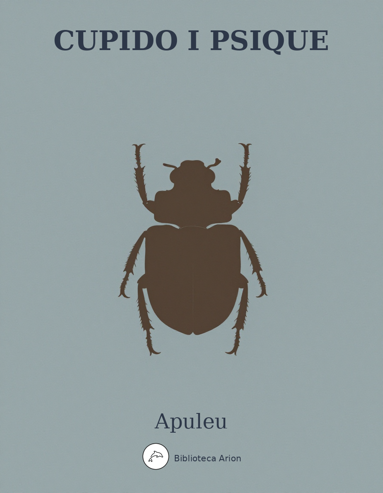

Cupido i Psique
Cupido et Psyche (Metamorphoseon IV.28–VI.24)
La faula intercalada de Cupido i Psique, narrada per una vella dins les Metamorfosis d'Apuleu. Una de les històries d'amor més influents de la literatura antiga, amb elements de conte de fades, al·legoria filosòfica i misteri religiós.
Autor: Lucius Apuleius Madaurensis (c. 124–170 dC)
Font: The Latin Library (thelatinlibrary.com)
Llengua: Llatí
Liber IV (a partir de IV.28)
[28] Erant in quadam civitate rex et regina. Hi tres numero filias forma conspicuas habuere, sed maiores quidem natu, quamvis gratissima specie, idonee tamen celebrari posse laudibus humanis credebantur, at vero puellae iunioris tam praecipua tam praeclara pulchritudo nec exprimi ac ne sufficienter quidem laudari sermonis humani penuria poterat. Multi denique civium et advenae copiosi, quos eximii spectaculi rumor studiosa celebritate congregabat, inaccessae formositatis admiratione stupidi et admoventes oribus suis dexteram primore digito in erectum pollicem residente ut ipsam prorsus deam Venerem religiosis
[29] Sic immensum procedit in dies opinio, sic insulas iam proxumas et terrae plusculum provinciasque plurimas fama porrecta pervagatur. Iam multi mortalium longis itineribus atque altissimis maris meatibus ad saeculi specimen gloriosum confluebant. Paphon nemo Cnidon nemo ac ne ipsa quidem Cythera ad conspectum deae Veneris navigabant; sacra differuntur, templa deformantur, pulvinaria proteruntur, caerimoniae negleguntur; incoronata simulacra et arae viduae frigido cinere foedatae. Puellae supplicatur et in humanis vultibus deae tantae numina placantur, et in matutino progressu virginis, victimis et epulis Veneris absentis nomen propitiatur, iamque per plateas commeantem populi frequentes floribus sertis et solutis adprecantur.
Haec honorum caelestium ad puellae mortalis cultum inmodica translatio verae Veneris vehementer incendit animos, et impatiens indignationis capite quassanti fremens altius sic secum disserit:
[30] “En rerum naturae prisca parens, en elementorum origo initialis, en orbis totius alma Venus, quae cum mortali puella partiario maiestatis honore tractor et nomen meum caelo conditum terrenis sordibus profanatur! Nimirum communi nominis piamento vicariae venerationis incertum sustinebo et imaginem meam circumferet puella moritura. Frustra me pastor ille cuius iustitiam fidemque magnus comprobavit Iuppiter ob eximiam speciem tantis praetulit deabus. Sed non adeo gaudens ista, quaecumque est, meos honores usurpaverit: iam faxo eam huius etiam ipsius inlicitae formonsitatis paeniteat.”
Et vocat confestim puerum suum pinnatum illum et satis temerarium, qui malis suis moribus contempta disciplina publica flammis et sagittis armatus per alienas domos nocte discurrens et omnium matrimonia corrumpens impune committit tanta flagitia et nihil prorsus boni facit. Hunc, quamquam genuina licentia procacem, verbis quoque insuper stimulat et perducit ad illam civitatem et Psychen — hoc enim nomine puella nuncupabatur — coram ostendit,
[31] et tota illa perlata de formonsitatis aemulatione fabula gemens ac fremens indignatione: “Per ego te” inquit “maternae caritatis foedere deprecor per tuae sagittae dulcia vulnera per flammae istius mellitas uredines vindictam tuae parenti sed plenam tribue et in pulchritudinem contumacem severiter vindica idque unum et pro omnibus unicum volens effice: virgo ista amore fraglantissimo teneatur hominis extremi, quem et dignitatis et patrimonii simul et incolumitatis ipsius Fortuna damnavit, tamque infimi ut per totum orbem non inveniat miseriae suae comparem.”
Sic effata et osculis hiantibus filium diu ac pressule saviata proximas oras reflui litoris petit, plantisque roseis vibrantium fluctuum summo rore calcato ecce iam profundi maris sudo resedit vertice, et ipsum quod incipit velle, set statim, quasi pridem praeceperit, non moratur marinum obsequium: adsunt Nerei filiae chorum canentes et Portunus caerulis barbis hispidus et gravis piscoso sinu Salacia et auriga parvulus delphinis Palaemon; iam passim maria persultantes Tritonum catervae hic concha sonaci leniter bucinat, ille serico tegmine flagrantiae solis obsistit inimici, alius sub oculis dominae speculum progerit, curru biiuges alii subnatant. Talis ad Oceanum pergentem Venerem comitatus exercitus.
[32] Interea Psyche cum sua sibi perspicua pulchritudine nullum decoris sui fructum percipit. Spectatur ab omnibus, laudatur ad omnibus, nec quisquam, non rex non regius nec de plebe saltem cupiens eius nuptiarum petitor accedit. Mirantur quidem divinam speciem, sed ut simulacrum fabre politum mirantur omnes. Olim duae maiores sorores, quarum temperatam formositatem nulli diffamarant populi, procis regibus desponsae iam beatas nuptias adeptae, sed Psyche virgo vidua domi residens deflet desertam suam solitudinem aegra corporis animi saucia, et quamvis gentibus totis complacitam odit in se suam formositatem. Sic infortunatissimae filiae miserrimus pater suspectatis caelestibus odiis et irae superum metuens dei Milesii vetustissimum percontatur oraculum, et a tanto numine precibus et victimis ingratae virgini petit nuptias et maritum. Sed Apollo, quamquam Graecus et Ionicus, propter Milesiae conditorem sic Latina sorte respondit:
[33] “Montis in excelsi scopulo, rex siste puellam ornatam mundo funerei thalami. Nec speres generum mortali stirpe creatum, sed saevum atque ferum vipereumque malum, quod pinnis volitans super aethera cuncta fatigat flammaque et ferro singula debilitat, quod tremit ipse Iovis quo numina terrificantur, fluminaque horrescunt et Stygiae tenebrae.”
Rex olim beatus affatus sanctae vaticinationis accepto pigens tristisque retro domum pergit suaeque coniugi praecepta soris enodat infaustae. Maeretur, fletur, lamentatur diebus plusculis. Sed dirae sortis iam urget taeter effectus. Iam feralium nuptiarum miserrimae virgini choragium struitur, iam taede lumen atrae fuliginis cinere marcescit, et sonus tibiae zygiae mutatur in querulum Ludii modum cantusque laetus hymenaei lugubri finitur ululatu et puella nuptura deterget lacrimas ipso suo flammeo. Sic adfectae domus triste fatum cuncta etiam civitas congemebat luctuque publico confestim congruens edicitur iustitium.
[34] Sed monitis caelestibus parendi necessitas misellam Psychen ad destinatam poenam efflagitabat. Perfectis igitur feralis thalami cum summo maerore sollemnibus toto prosequente populo vivum producitur funus, et lacrimosa Psyche comitatur non nuptias sed exsequias suas. Ac dum maesti parentes et tanto malo perciti nefarium facinus perficere cunctatur, ipsa illa filia talibus eos adhortatur vocibus: “Quid infelicem senectam fletu diutino cruciatis? Quid spiritum vestrum, qui magis meus est, crebris eiulatibus fatigatis? Quid lacrimis inefficacibus ora mihi veneranda foedatis? Quid laceratis in vestris oculis mea lumina? Quid canities scinditis? Quid pectora, quid ubera sancta tunditis? Haec erunt vobis egregiae formonsitatis meae praeclara praemia. Invidiae nefariae letali plaga percussi sero sentitis. Cum gentes et populi celebrarent nos divinis honoribus, cum novam me Venerem ore consono nuncuparent, tunc dolere, tunc flere, tunc me iam quasi peremptam lugere debuistis. Iam sentio iam video solo me nomine Veneris perisse. Ducite me et cui sors addixit scopulo sistite. Festino felices istas nuptias obire, festino generosum illum maritum meum videre. Quid differo quid detrecto venientem, qui totius orbis exitio natus est?”
[35] Sic profata virgo conticuit ingressuque iam valido pompae populi prosequentis sese miscuit. Itur ad constitutum scopulom montis ardui, cuius in summo cacumine statutam puellam cuncti deserunt, taedasque nuptiales, quibus praeluxerant, ibidem lacrimis suis extinctas relinquentes deiectis capitibus domuitionem parant. Et miseri quidem parentes eius tanta clade defessi, clausae domus abstrusi tenebris, perpetuae nocti sese dedidere. Psychen autem paventem ac trepidam et in ipso scopuli vertice deflentem mitis aura molliter spirantis Zephyri vibratis hinc inde laciniis et reflato sinu sensim levatam suo tranquillo spiritu vehens paulatim per devexa rupis excelsae vallis subditae florentis cespitis gremio leniter delapsam reclinat.
Apuleius The Latin Library The Classics Page
Liber V
1 2 3 4 5 6 7 8 9 10 11 12 13 14 15 16 17 18 19 20 21 22 23 24 25 26 27 28 29 30 31
[1] Psyche teneris et herbosis locis in ipso toro roscidi graminis suave recubans, tanta mentis perturbatione sedata, dulce conquievit. Iamque sufficienti recreata somno placido resurgit animo. Videt lucum proceris et vastis arboribus consitum, videt fontem vitreo latice perlucidum; medio luci meditullio prope fontis adlapsum domus regia est aedificata non humanis manibus sed divinis artibus. Iam scies ab introitu primo dei cuiuspiam luculentum et amoenum videre te diversorium. Nam summa laquearia citro et ebore curiose cavata subeunt aureae columnae, parietes omnes argenteo caelamine conteguntur bestiis et id genus pecudibus occurrentibus ob os introeuntium. Mirus prorsum [magnae artis] homo immo semideus vel certe deus, qui magnae artis suptilitate tantum efferavit argentum.
Enimuero pavimenta ipsa lapide pretioso caesim deminuto in varia picturae genera discriminantur: vehementer iterum ac saepius beatos illos qui super gemmas et monilia calcant! Iam ceterae partes longe lateque dispositae domus sine pretio pretiosae totique parietes solidati massis averis splendore proprio coruscant, ut diem suum sibi domi faciant licet sole nolente: sic cubicula sic porticus sic ipsae valvae fulgurant. Nec setius opes ceterae maiestati domus respondent, ut equidem illud recte videatur ad conversationem humanam magno Iovi fabricatum caeleste palatium.
[2] Invitata Psyche talium locorum oblectatione propius accessit et paulo fidentior intra limen sese facit, mox prolectante studio pulcherrimae visionis rimatur singula et altrinsecus aedium horrea sublimi fabrica perfecta magnisque congesta gazis conspicit. Nec est quicquam quod ibi non est. Sed praeter ceteram tantarum divitiarum admirationem hoc erat praecipue mirificum, quod nullo vinculo nullo claustro nullo custode totius orbis thensaurus ille muniebatur. Haec ei summa cum voluptate visenti offert sese vox quaedam corporis sui nuda et: “Quid,” inquit “domina, tantis obstupescis opibus? Tua sunt haec omnia. Prohinc cubiculo te refer et lectulo lassitudinem refove et ex arbitrio lavacrum pete. Nos, quarum voces accipis, tuae famulae sedulo tibi praeministrabimus nec corporis curatae tibi regales epulae morabuntur.”
[3] Sensit Psyche divinae providentiae beatitudinem, monitusque vocis informis audiens et prius somno et mox lavacro fatigationem sui diluit, visoque statim proximo semirotundo suggestu, propter instrumentum cenatorium rata refectui suo commodum libens accumbit. Et ilico vini nectarei eduliumque variorum fercula copiosa nullo serviente sed tantum spiritu quodam impulsa subministrantur. Nec quemquam tamen illa videre poterat, sed verba tantum audiebat excidentia et solas voces famulas habebat. Post opimas dapes quidam introcessit et cantavit invisus et alius citharam pulsavit, quae videbatur nec ipsa. Tunc modulatae multitudinis conserta vox aures eius affertur, ut, quamvis hominum nemo pareret, chorus tamen esse pateret.
[4] Finitis voluptatibus vespera suadente concedit Psyche cubitum. Iamque provecta nocte clemens quidam sonus aures eius accedit. Tunc virginitati suae pro tanta solitudine metuens et pavet et horrescit et quovis malo plus timet quod ignorat. Iamque aderat ignobilis maritus et torum inscenderat et uxorem sibi Psychen fecerat et ante lucis exortum propere discesserat. Statim voces cubiculo praestolatae novam nuptam interfectae virginitatis curant. Haec diutino tempore sic agebantur. Atque ut est natura redditum, novitas per assiduam consuetudinem delectationem ei commendarat et sonus vocis incertae solitudinis erat solacium.
Interea parentes eius indefesso luctu atque maerore consenescebant, latiusque porrecta fama sorores illae maiores cuncta cognorant propereque maestae atque lugubres deserto lare certatim ad parentum suorum conspectum adfatumque perrexerant.
[5] Ea nocte ad suam Psychen sic infit maritus — namque praeter oculos et manibus et auribus ut praesentius nihil sentiebatur: “Psyche dulcissima et cara uxor, exitiabile tibi periculum minatur fortuna saevior, quod observandum pressiore cautela censeo. Sorores iam tuae mortis opinione turbatae tuumque vestigium requirentes scopulum istum protinus aderunt, quarum si quas forte lamentationes acceperis, neque respondeas immo nec prospicias omnino; ceterum mihi quidem gravissimum dolorem tibi vero summum creabis exitium.”
Annuit et ex arbitrio mariti se facturam spopondit, sed eo simul cum nocte dilapso diem totum lacrimis ac plangoribus misella consumit, se nunc maxime prorsus perisse iterans, quae beati carceris custodia septa et humanae conversationis colloquio viduata nec sororibus quidem suis de se maerentibus opem salutarem ferre ac ne videre eas quidem omnino posset. Nec lavacro nec cibo nec ulla denique refectione recreata flens ubertim decessit ad somnum.
[6] Nec mora, cum paulo maturius lectum maritus accubans eamque etiam nunc lacrimantem complexus sic expostulat: “Haecine mihi pollicebare, Psyche mea? Quid iam de te tuus maritus exspecto, quid spero? Et perdia et pernox nec inter amplexus coniugales desinis cruciatum. Age iam nunc ut voles, et animo tuo damnosa poscenti pareto! Tantum memineris meae seriae monitionis, cum coeperis sero paenitere.”
Tunc illa precibus et dum se morituram comminatur extorquet a marito cupitis adnuat, ut sorores videat, luctus mulceat, ora conferat. Sic ille novae nuptae precibus veniam tribuit et insuper quibuscumque vellet eas auri vel monilium donare concessit, sed identidem monuit ac saepe terruit ne quando sororum pernicioso consilio suasa de forma mariti quaerat neve se sacrilega curiositate de tanto fortunarum suggestu pessum deiciat nec suum postea contingat amplexum. Gratias egit marito iamque laetior animo: “Sed prius” inquit “centies moriar quam tuo isto dulcissimo conubio caream. Amo enim et efflictim te, quicumque es, diligo aeque ut meum spiritum, nec ipsi Cupidini comparo. Sed istud etiam meis precibus, oro, largire et illi tuo famulo Zephyro praecipe simili vectura sorores hic mihi sistat”, et imprimens oscula suasoria et ingerens verba mulcentia et inserens membra cohibentia haec etiam blanditiis astruit: “Mi mellite, mi marite, tuae Psychae dulcis anima.” Vi ac potestate Venerii susurrus invitus succubuit maritus et cuncta se facturum spopondit atque etiam luce proxumante de manibus uxoris evanuit.
[7] At illae sorores percontatae scopulum locumque illum quo fuerat Psyche deserta festinanter adveniunt ibique difflebant oculos et plangebant ubera, quoad crebris earum heiulatibus saxa cautesque parilem sonum resultarent. Iamque nomine proprio sororem miseram ciebant, quoad sono penetrabili vocis ululabilis per prona delapso amens et trepida Psyche procurrit e domo et: “Quid” inquit “vos miseris lamentationibus necquicquam effligitis? Quam lugetis, adsum. Lugubres voces desinite et diutinis lacrimis madentes genas siccate tandem, quippe cum iam possitis quam plangebatis amplecti.”
Tunc vocatum Zephyrum praecepti maritalis admonet. Nec mora, cum ille parens imperio statim clementissimis flatibus innoxia vectura deportat illas. Iam mutuis amplexibus et festinantibus saviis sese perfruuntur et illae sedatae lacrimae postliminio redeunt prolectante gaudio. “Sed et tectum” inquit “et larem nostrum laetae succedite et afflictas animas cum Psyche vestra recreate.”
[8] Sic allocuta summas opes domus aureae vocumque servientium populosam familiam demonstrat auribus earum lavacroque pulcherrimo et inhumanae mensae lautitiis eas opipare reficit, ut illarum prorsus caelestium divitiarum copiis affluentibus satiatae iam praecordiis penitus nutrirent invidam. Denique altera earum satis scrupulose curioseque percontari non desinit, quis illarum caelestium rerum dominus, quisve vel qualis ipsius sit maritus. Nec tamen Psyche coniugale illud praeceptum ullo pacto temerat vel pectoris arcanis exigit, sed e re nata confingit esse iuvenem quendam et speciosum, commodum lanoso barbitio genas inumbrantem, plerumque rurestribus ac montanis venatibus occupatum, et ne qua sermonis procedentis labe consilium tacitum proderetur, auro facto gemmosisque monilibus onustas eas statim vocato Zephyro tradit reportandas.
[9] Quo protenus perpetrato sorores egregiae domum redeuntes iamque gliscentis invidiae felle fraglantes multa secum sermonibus mutuis perstrepebant. Sic denique infit altera: “En orba et saeva et iniqua Fortuna! Hocine tibi complacuit, ut utroque parente prognatae germanae diversam sortem sustineremus? Et nos quidem quae natu maiore sumus maritis advenis ancillae deditae extorres et lare et ipsa patria degamus longe parentum velut exulantes, haec autem novissima, quam fetu satiante postremus partus effudit, tantis opibus et deo marito potita sit, quae nec uti recte tanta bonorum copia novit? Vidisti, soror, quanta in domo iacent et qualia monilia, quae praenitent vestes, quae splendicant gemmae, quantum praeterea passim calcatur aurum. Quodsi maritum etiam tam formonsum tenet ut affirmat, nulla nunc in orbe toto felicior vivit. Fortassis tamen procedente consuetudine et adfectione roborata deam quoque illam deus maritus efficiet. Sic est hercules, sic se gerebat ferebatque. Iam iam sursum respicit et deam spirat mulier, quae voces ancillas habet et ventis ipsis imperat. At ego misera primum patre meo seniorem maritum sortita sum, dein cucurbita calviorem et quovis puero pusilliorem, cunctam domum seris et catenis obditam custodientem.”
[10] Suscipit alia: “Ego vero maritum articulari etiam morbo complicatum curvatumque ac per hoc rarissimo venerem meam recolente sustineo, plerumque detortos et duratos in lapidem digitos eius perfricans, fomentis olidis et pannis sordidis et faetidis cataplasmatibus manus tam delicatas istas adurens, nec uxoris osam faciem sed medicae laboriosam personam sustinens. Et tu quidem soror videris quam patienti vel potius servili — dicam enim libere quod sentio — haec perferas animo: enimuero ego nequeo sustinere ulterius tam beatam fortunam allapsam indignae. Recordare enim quam superbe quam adroganter nobiscum egerit et ipsa iactatione immodicae ostentationis tumentem suum prodiderit animum deque tantis divitiis exigua nobis invita proiecerit confestimque praesentiam nostram gravata propelli et efflari exsibilarique nos iusserit. Nec sum mulier nec omnino spiro, nisi eam pessum de tantis opibus deiecero. Ac si tibi etiam, ut par est, inacuit nostra contumelia, consilium validum requiramus ambae. Iamque ista quae ferimus non parentibus nostris ac nec ulli monstremus alii, immo nec omnino quicquam de eius salute norimus. Sat est quod ipsae vidimus quae vidisse paenitet, nedum ut genitoribus et omnibus populis tam beatum eius differamus praeconium. Nec sunt enim beati quorum divitias nemo novit. Sciet se non ancillas sed sorores habere maiores. Et nunc quidem concedamus ad maritos, et lares pauperes nostros sed plane sobrios revisamus, diuque cogitationibus pressioribus instructae ad superbiam poeniendam firmiores redeamus.”
[11] Placet pro bono duabus malis malum consilium totisque illis tam pretiosis muneribus absconditis comam trahentes et proinde ut merebantur ora lacerantes simulatos redintegrant fletus. Ac sic parentes quoque redulcerato prorsum dolore raptim deterrentes vesania turgidae domus suas contendunt dolum scelestum immo vero parricidium struentes contra sororem insontem.
Interea Psychen maritus ille quem nescit rursum suis illis nocturnis sermonibus sic commonet: “Videsne quantum tibi periculum? Velitatur Fortuna eminus, ac nisi longe firmiter praecaves mox comminus congredietur. Perfidae lupulae magnis conatibus nefarias insidias tibi comparant, quarum summa est ut te suadeant meos explorare vultus, quos, ut tibi saepe praedixi, non videbis si videris. Ergo igitur si posthac pessimae illae lamiae noxiis animis armatae venerint — venient autem, scio — neque omnino sermonem conferas, et si id tolerare pro genuina simplicitate proque animi tui teneritudine non potueris, certe de marito nil quicquam vel audias vel respondeas. Nam et familiam nostram iam propagabimus et hic adhuc infantilis uterus gestat nobis infantem alium, si texeris nostra secreta silentio, divinum, si profanaveris, mortalem.”
[12] Nuntio Psyche laeta florebat et divinae subolis solacio plaudebat et futuri pignoris gloria gestiebat et materni nominis dignitate gaudebat. Crescentes dies et menses exeuntes anxia numerat et sarcinae nesciae rudimento miratur de brevi punctulo tantum incrementulum locupletis uteri. Sed iam pestes illae taeterrimaeque Furiae anhelantes vipereum virus et festinantes impia celeritate navigabant. Tunc sic iterum momentarius maritus suam Psychen admonet: “En dies ultima et casus extremus et! Sexus infestus et sanguis inimicus iam sumpsit arma et castra commovit et aciem direxit et classicum personavit; iam mucrone destricto iugulum tuum nefariae tuae sorores petunt. Heu quantis urguemur cladibus, Psyche dulcissima! Tui nostrique misere religiosaque continentia domum maritum teque et istum parvulum nostrum imminentis ruinae infortunio libera. Nec illas scelestas feminas, quas tibi post internecivum odium et calcata sanguinis foedera sorores appellare non licet, vel videas vel audias, cum in morem Sirenum scopulo prominentes funestis vocibus saxa personabunt.”
[13] Suscipit Psyche singultu lacrimoso sermonem incertans: “Iam dudum, quod sciam, fidei atque parciloquio meo perpendisti documenta, nec eo setius adprobabitur tibi nunc etiam firmitas animi mei. Tu modo Zephyro nostro rursum praecipe fungatur obsequio, et in vicem denegatae sacrosanctae imaginis tuae redde saltem conspectum sororum. Per istos cinnameos et undique pendulos crines tuos per teneras et teretis et mei similes genas per pectus nescio quo calore fervidum sic in hoc saltem parvulo cognoscam faciem tuam: supplicis anxiae piis precibus erogatus germani complexus indulge fructum et tibi devotae dicataeque Psychae animam gaudio recrea. Nec quicquam amplius in tuo vultu requiro, iam nil officiunt mihi nec ipsae nocturnae tenebrae: teneo te, meum lumen.”
His verbis et amplexibus mollibus decantatus maritus lacrimasque eius suis crinibus detergens facturum spopondit et praevertit statim lumen nascentis diei.
[14] Iugum sororium consponsae factionis ne parentibus quidem visis recta de navibus scopulum petunt illum praecipiti cum velocitate nec venti ferentis oppertae praesentiam licentiosa cum temeritate prosiliunt in altum. Nec immemor Zephyrus regalis edicti, quamvis invitus, susceptas eas gremio spirantis aurae solo reddidit. At illae incunctatae statim conferto vestigio domum penetrant complexaeque praedam suam sorores nomine mentientes thensaurumque penitus abditae fraudis vultu laeto tegentes sic adulant: “Psyche, non ita ut pridem parvula, et ipsa iam mater es. Quantum, putas, boni nobis in ista geris perula! Quantis gaudiis totam domum nostram hilarabis! O nos beatas quas infantis aurei nutrimenta laetabunt! Qui si parentum, ut oportet, pulchritudini responderit, prorsus Cupido nascetur.”
[15] Sic adfectione simulata paulatim sororis invadunt animum. Statimque eas lassitudinem viae sedilibus refotas et balnearum vaporosis fontibus curatas pulcherrime triclinio mirisque illis et beatis edulibus atque tuccetis oblectat. Iubet citharam loqui: psallitur; tibias agere: sonatur; choros canere: cantatur. Quae cuncta nullo praesente dulcissimis modulis animos audientium remulcebant. Nec tamen scelestarum feminarum nequitia vel illa mellita cantus dulcedine mollita conquievit, sed ad destinatam fraudium pedicam sermonem conferentes dissimulanter occipiunt sciscitari qualis ei maritus et unde natalium secta cuia proveniret. Tunc illa simplicitate nimia pristini sermonis oblita novum commentum instruit atque maritum suum de provincia proxima magnis pecuniis negotiantem iam medium cursum aetatis agere interspersum rara canitie. Nec in sermone isto tantillum morata rursum opiparis muneribus eas onustas ventoso vehiculo reddidit.
[16] Sed dum Zephyri tranquillo spiritu sublimatae domum redeunt, sic secum altercantes: “Quid, soror, dicimus de tam monstruoso fatuae illis mendacio? Tunc adolescens modo florenti lanugine barbam instruens, nunc aetate media candenti canitie lucidus. Quis ille quem temporis modici spatium repentina senecta reformavit? Nil aliud reperies, mi soror, quam vel mendacia istam pessimam feminam confingere vel formam mariti sui nescire; quorum utrum verum est, opibus istis quam primum exterminanda est. Quodsi viri sui faciem ignorat, deo profecto denupsit et deum nobis praegnatione ista gerit. Certe si divini puelli — quod absit — haec mater audierit, statim me laqueo nexili suspendam. Ergo interim ad parentes nostros redeamus et exordio sermonis huius quam concolores fallacias adtexamus.”
[17] Sic inflammatae, parentibus fastidienter appellatis et nocte turbata vigiliis, perditae matutino scopulum pervolant et inde solito venti praesidio vehementer devolant lacrimisque pressura palpebrarum coactis hoc astu puellam appellant: “Tu quidem felix et ipsa tanti mali ignorantia beata sedes incuriosa periculi tui, nos autem, quae pervigili cura rebus tuis excubamus, cladibus tuis misere cruciamur. Pro vero namque comperimus nec te, sociae scilicet doloris casusque tui, celare possumus immanem colubrum multinodis voluminibus serpentem, veneno noxio colla sanguinantem hiantemque ingluvie profunda, tecum noctibus latenter adquiescere. Nunc recordare sortis Pythicae, quae te trucis bestiae nuptiis destinatam esse clamavit. Et multi coloni quique circumsecus venantur et accolae plurimi viderunt eum vespera redeuntem e pastu proximique fluminis vadis innatantem.
[18] Nec diu blandis alimoniarum obsequiis te saginaturum omnes adfirmant, sed cum primum praegnationem tuam plenus maturaverit uterus, opimiore fructu praeditam devoraturum. Ad haec iam tua est existimatio, utrum sororibus pro tua cara salute sollicitis adsentiri velis et declinata morte nobiscum secura periculi vivere an saevissimae bestiae sepeliri visceribus. Quodsi te ruris huius vocalis solitudo vel clandestinae veneris faetidi periculosique concubitus et venenati serpentis amplexus delectant, certe piae sorores nostrum fecerimus.”
Tunc Psyche misella, utpote simplex et animi tenella, rapitur verborum tam tristium formidine: extra terminum mentis suae posita prorsus omnium mariti monitionum suarumque promissionum memoriam effudit et in profundum calamitatis sese praecipitavit tremensque et exsangui colore lurida tertiata verba semihianti voce substrepens sic ad illas ait:
[19] “Vos quidem, carissimae sorores, ut par erat, in officio vestrae pietatis permanetis, verum et illi qui talia vobis adfirmant non videntur mihi mendacium fingere. Nec enim umquam viri mei vidi faciem vel omnino cuiatis sit novi, sed tantum nocturnis subaudiens vocibus maritum incerti status et prorsus lucifugam tolero, bestiamque aliquam recte dicentibus vobis merito consentio. Meque magnopere semper a suis terret aspectibus malumque grande de vultus curiositate praeminatur. Nunc si quam salutarem opem periclitanti sorori vestrae potestis adferre, iam nunc subsistite; ceterum incuria sequens prioris providentiae beneficia conrumpet.” Tunc nanctae iam portis patentibus nudatum sororis animum facinerosae mulieres, omissis tectae machinae latibulis, destrictis gladiis fraudium simplicis puellae paventes cogitationes invadunt.
[20] Sic denique altera: “Quoniam nos originis nexus pro tua incolumitate ne periculum quidem ullum ante oculos habere compellit, viam quae sola deducit iter ad salutem diu diuque cogitatam monstrabimus tibi. Novaculam praeacutam adpulsu etiam palmulae lenientis exasperatam tori qua parte cubare consuesti latenter absconde, lucernamque concinnem completam oleo claro lumine praemicantem subde aliquo claudentis aululae tegmine, omnique isto apparatu tenacissime dissimulato, postquam sulcatum trahens gressum cubile solitum conscenderit iamque porrectus et exordio somni prementis implicitus altum soporem flare coeperit, toro delapsa nudoque vestigio pensilem gradum paullulatim minuens, caecae tenebrae custodia liberata lucerna, praeclari tui facinoris opportunitatem de luminis consilio mutuare, et ancipiti telo illo audaciter, prius dextera sursum elata, nisu quam valido noxii serpentis nodum cervicis et capitis abscide. Nec nostrum tibi deerit subsidium; sed cum primum illius morte salutem tibi feceris, anxie praestolatae advolabimus cunctisque istis ocius tecum relatis votivis nuptiis hominem te iungemus homini.”
[21] Tali verborum incendio flammata viscera sororis prorsus ardentis deserentes ipsae protinus tanti mali confinium sibi etiam eximie metuentes flatus alitis impulsu solito porrectae super scopulum ilico pernici se fuga proripiunt statimque conscensis navibus abeunt.
At Psyche relicta sola, nisi quod infestis Furiis agitata sola non est aestu pelagi simile maerendo fluctuat, et quamvis statuto consilio et obstinato animo iam tamen facinori manus admovens adhuc incerta consilii titubat multisque calamitatis suae distrahitur affectibus. Festinat differt, audet trepidat, diffidit irascitur et, quod est ultimum, in eodem corpore odit bestiam, diligit maritum. Vespera tamen iam noctem trahente praecipiti festinatione nefarii sceleris instruit apparatum. Nox aderat et maritus aderat primisque Veneris proeliis velitatus in altum soporem descenderat.
[22] Tunc Psyche et corporis et animi alioquin infirma fati tamen saevitia subministrante viribus roboratur, et prolata lucerna et adrepta novacula sexum audacia mutatur.
Sed cum primum luminis oblatione tori secreta claruerunt, videt omnium ferarum mitissimam dulcissimamque bestiam, ipsum illum Cupidinem formonsum deum formonse cubantem, cuius aspectu lucernae quoque lumen hilaratum increbruit et acuminis sacrilegi novaculam paenitebat. At vero Psyche tanto aspectu deterrita et impos animi marcido pallore defecta tremensque desedit in imos poplites et ferrum quaerit abscondere, sed in suo pectore; quod profecto fecisset, nisi ferrum timore tanti flagitii manibus temerariis delapsum evolasset. Iamque lassa, salute defecta, dum saepius divini vultus intuetur pulchritudinem, recreatur animi. Videt capitis aurei genialem caesariem ambrosia temulentam, cervices lacteas genasque purpureas pererrantes crinium globos decoriter impeditos, alios antependulos, alios retropendulos, quorum splendore nimio fulgurante iam et ipsum lumen lucernae vacillabat; per umeros volatilis dei pinnae roscidae micanti flore candicant et quamvis alis quiescentibus extimae plumulae tenellae ac delicatae tremule resultantes inquieta lasciviunt; ceterum corpus glabellum atque luculentum et quale peperisse Venerem non paeniteret. Ante lectuli pedes iacebat arcus et pharetra et sagittae, magni dei propitia tela.
[23] Quae dum insatiabili animo Psyche, satis et curiosa, rimatur atque pertrectat et mariti sui miratur arma, depromit unam de pharetra sagittam et punctu pollicis extremam aciem periclitabunda trementis etiam nunc articuli nisu fortiore pupugit altius, ut per summam cutem roraverint parvulae sanguinis rosei guttae. Sic ignara Psyche sponte in Amoris incidit amorem. Tunc magis magisque cupidine fraglans Cupidinis prona in eum efflictim inhians patulis ac petulantibus saviis festinanter ingestis de somni mensura metuebat. Sed dum bono tanto percita saucia mente fluctuat, lucerna illa, sive perfidia pessima sive invidia noxia sive quod tale corpus contingere et quasi basiare et ipsa gestiebat, evomuit de summa luminis sui stillam ferventis olei super umerum dei dexterum. Hem audax et temeraria lucerna et amoris vile ministerium, ipsum ignis totius deum aduris, cum te scilicet amator aliquis, ut diutius cupitis etiam nocte potiretur, primus invenerit. Sic inustus exiluit deus visaque detectae fidei colluvie prorsus ex osculis et manibus infelicissimae coniugis tacitus avolavit.
[24] At Psyche statim resurgentis eius crure dextero manibus ambabus adrepto sublimis evectionis adpendix miseranda et per nubilas plagas penduli comitatus extrema consequia tandem fessa delabitur solo. Nec deus amator humi iacentem deserens involavit proximam cupressum deque eius alto cacumine sic eam graviter commotus adfatur:
“Ego quidem, simplicissima Psyche, parentis meae Veneris praeceptorum immemor, quae te miseri extremique hominis devinctam cupidine infimo matrimonio addici iusserat, ipse potius amator advolavi tibi. Sed hoc feci leviter, scio, et praeclarus ille sagittarius ipse me telo meo percussi teque coniugem meam feci, ut bestia scilicet tibi viderer et ferro caput excideres meum quod istos amatores tuos oculos gerit. Haec tibi identidem semper cavenda censebam, haec benivole remonebam. Sed illae quidem consiliatrices egregiae tuae tam perniciosi magisterii dabunt actutum mihi poenas, te vero tantum fuga mea punivero.” Et cum termino sermonis pinnis in altum se proripuit.
[25] Psyche vero humi prostrata et, quantum visi poterat, volatus mariti prospiciens extremis affligebat lamentationibus animum. Sed ubi remigio plumae raptum maritum proceritas spatii fecerat alienum, per proximi fluminis marginem praecipitem sese dedit. Sed mitis fluvius in honorem dei scilicet qui et ipsas aquas urere consuevit metuens sibi confestim eam innoxio volumine super ripam florentem herbis exposuit. Tunc forte Pan deus rusticus iuxta supercilium amnis sedebat complexus Echo montanam deam eamque voculas omnimodas edocens recinere; proxime ripam vago pastu lasciviunt comam fluvii tondentes capellae. Hircuosus deus sauciam Psychen atque defectam, utcumque casus eius non inscius, clementer ad se vocatam sic permulcet verbis lenientibus: “Puella scitula, sum quidem rusticans et upilio sed senectutis prolixae beneficio multis experimentis instructus. Verum si recte coniecto, quod profecto prudentes viri divinationem autumant, ab isto titubante et saepius vaccillante vestigio deque minio pallore corporis et assiduo suspiritu immo et ipsis marcentibus oculis tuis amore minio laboras. Ergo mihi ausculta nec te rursus praecipitio vel ullo mortis accersitae genere perimas. Luctum desine et pone maerorem precibusque potius Cupidinem deorum maximum percole et utpote adolescentem delicatum luxuriosumque blandis obsequiis promerere.”
[26]. Sic locuto deo pastore nulloque sermone reddito sed adorato tantum numine salutari Psyche pergit ire. Sed cum aliquam multum viae laboranti vestigio pererrasset, inscia quodam tramite iam die labente accedit quandam civitatem, in qua regnum maritus unius sororis eius optinebat. Qua re cognita Psyche nuntiari praesentiam suam sorori desiderat; mox inducta mutuis amplexibus alternae salutationis expletis percontanti causas adventus sui sic incipit:
“Meministi consilium vestrum, scilicet quo mihi suasistis ut bestiam, quae mariti mentito nomine mecum quiescebat, prius quam ingluvie voraci me misellam hauriret, ancipiti novacula peremerem. Set cum primum, ut aeque placuerat, conscio lumine vultus eius aspexi, video mirum divinumque prorsus spectaculum, ipsum illum deae Veneris filium, ipsum inquam Cupidinem, leni quiete sopitum. Ac dum tanti boni spectaculo percita et nimia voluptatis copia turbata fruendi laborarem inopia, casu scilicet pessumo lucerna fervens oleum rebullivit in eius umerum. Quo dolore statim somno recussus, ubi me ferro et igni conspexit armatam, “Tu quidem” inquit “ob istud tam dirum facinus confestim toro meo divorte tibique res tuas habeto, ego vero sororem tuam” — et nomen quo tu censeris aiebat — “iam mihi confarreatis nuptis coniugabo” et statim Zephyro praecipit ultra terminos me domus eius efflaret.”
[27] Necdum sermonem Psyche finierat, et illa vesanae libidinis et invidiae noxiae stimulis agitata, e re concinnato mendacio fallens maritum, quasi de morte parentum aliquid comperisset, statim navem ascendit et ad illum scopulum protinus pergit et quamvis alio flante vento caeca spe tamen inhians, “Accipe me,” dicens “Cupido, dignam te coniugem et tu, Zephyre, suscipe dominam” saltu se maximo praecipitem dedit. Nec tamen ad illum locum vel satem mortua pervenire potuit. Nam per saxa cautium membris iactatis atque dissipatis et proinde ut merebatur laceratis visceribus suis alitibus bestiisque obvium ferens pabulum interiit.
Nec vindictae sequentis poena tardavit. Nam Psyche rursus errabundo gradu pervenit ad civitatem aliam, in qua pari modo soror morabatur alia. Nec setius et ipsa fallacie germanitatis inducta et in sororis sceleratas nuptias aemula festinavit ad scopulum inque simile mortis exitium cecidit.
[28] Interim, dum Psyche quaestioni Cupidinis intenta populos circumibat, at ille vulnere lucernae dolens in ipso thalamo matris iacens ingemebat. Tunc avis peralba illa gavia quae super fluctus marinos pinnis natat demergit sese propere ad Oceani profundum gremium. Ibi commodum Venerem lavantem natantemque propter assistens indicat adustum filium eius gravi vulneris dolore maerentem dubium salutis iacere, iamque per cunctorum ora populorum rumoribus conviciisque variis omnem Veneris familiam male audire, quod ille quidem montano scortatu tu vero marino natatu secesseritis, ac per hoc non voluptas ulla non gratia non lepos, sed incompta et agrestia et horrida cuncta sint, non nuptiae coniugales non amicitiae sociales non liberum caritates, sed enormis colluvies et squalentium foederum insuave fastidium.
Haec illa verbosa et satis curiosa avis in auribus Veneris fili lacerans existimationem ganniebat. At Venus irata solidum exclamat repente: “Ergo iam ille bonus filius meus habet amicam aliquam? Prome agedum, quae sola mihi servis amanter, nomen eius quae puerum ingenuum et investem sollicitavit, sive illa de Nympharum populo seu de Horarum numero seu de Musarum choro vel de mearum Gratiarum ministerio.”
Nec loquax illa conticuit avis, sed: “Nescio,” inquit “domina: puto puellam, si probe memini, Psyches nomine dici: illam dicitur efflicte cupere.”
Tunc indignata Venus exclamavit vel maxime: “Psychen ille meae formae succubam mei nominis aemulam vere diligit? Nimirum illud incrementum lenam me putavit cuius monstratu puellam illam cognosceret.”
[29] Haec quiritans properiter emergit e mari suumque protinus aureum thalamum petit et reperto, sicut audierat, aegroto puero iam inde a foribus quam maxime boans: “Honesta” inquit “haec et natalibus nostris bonaeque tuae frugi congruentia, ut primum quidem tuae parentis immo dominae praecepta calcares, nec sordidis amoribus inimicam meam cruciares, verum etiam hoc aetatis puer tuis licentiosis et immaturis iungeres amplexibus, ut ego nurum scilicet tolerarem inimicam. Sed utique praesumis nugo et corruptor et inamabilis te solum generosum nec me iam per aetatem posse concipere. Velim ergo scias multo te meliorem filium alium genituram, immo ut contumeliam magis sentias aliquem de meis adoptaturam vernulis, eique donaturam istas pinnas et flammas et arcum et ipsas sagittas et omnem meam supellectilem, quam tibi non ad hos usus dederam: nec enim de patris tui bonis ad instructionem istam quicquam concessum est.
[30] Sed male prima a pueritia inductus es et acutas manus habes et maiores tuos irreverenter pulsasti totiens et ipsa matrem tuam, me inquam ipsam, parricida denudas cotidie et percussisti saepius et quasi viduam utique contemnis nec vitricum tuum fortissimum illum maximumque bellatorem metuis. Quidni? cui saepius in angorem mei paelicatus puellas propinare consuesti. Sed iam faxo te lusus huius paeniteat et sentias acidas et amaras istas nuptias. — Sed nunc inrisui habita quid agam? Quo me conferam? Quibus modis stelionem istum cohibeam? Petamne auxilium ab inimica mea Sobrietate, quam propter huius ipsius luxuriam offendis saepius? At rusticae squalentisque feminae conloquium prorsus [adhibendum est] horresco. Nec tamen vindictae solacium undeunde spernendum est. Illa mihi prorsus adhibenda est nec ulla alia, quae castiget asperrime nugonem istum, pharetram explicet et sagittas dearmet, arcum enodet, taedam deflammet, immo et ipsum corpus eius acrioribus remediis coerceat. Tunc iniuriae meae litatum crediderim cum eius comas quas istis manibus meis subinde aureo nitore perstrinxi deraserit, pinnas quas meo gremio nectarei fontis infeci praetotonderit.”
[31] Sic effata foras sese proripit infesta et stomachata biles Venerias. Sed eam protinus Ceres et Iuno continantur visamque vultu tumido quaesiere cur truci supercilio tantam venustatem micantium oculorum coerceret. At illa: “Opportune” inquit ” ardenti prorsus isto meo pectori volentiam scilicet perpetraturae venitis. Sed totis, oro, vestris viribus Psychen illam fugitivam volaticam mihi requirite. Nec enim vos utique domus meae famosa fabula et non dicendi filii mei facta latuerunt.”
Tunc illae non ignarae quae gesta sunt palpare Veneris iram saevientem sic adortae: “Quid tale, domina, deliquit tuus filius ut animo pervicaci voluptate illius impugnes et, quam ille diligit, tu quoque perdere gestias? Quod autem, oramus, isti crimen si puellae lepidae libenter adrisit? An ignoras eum masculum et iuvenem esse vel certe iam quot sit annorum oblita es? An, quod aetatem portat bellule, puer tibi semper videtur? Mater autem tu et praeterea cordata mulier filii tui lusus semper explorabis curiose et in eo luxuriem culpabis et amores revinces et tuas artes tuasque delicias in formonso filio reprehendes? Quid autem te deum, qui hominum patietur passim cupidines populis disseminantem, cum tuae domus amores amare coerceas et vitiorum muliebrium publicam praecludas officinam?” Sic illae metu sagittarum patrocinio gratioso Cupidini quamvis absenti blandiebantur. Sed Venus indignata ridicule tractari suas iniurias praeversis illis altrorsus concito gradu pelago viam capessit.
Apuleius The Latin Library The Classics Page
Liber VI (fins a VI.24)
1 2 3 4 5 6 7 8 9 10 11 12 13 14 15 16 17 18 19 20 21 22 23 24 25 26 27 28 29 30 31 32
[1] Interea Psyche variis iactabatur discursibus, dies noctesque mariti vestigationibus inquieta animi, tanto cupidior iratum licet si non uxoriis blanditiis lenire certe servilibus precibus propitiare. Et prospecto templo quodam in ardui montis vertice: “Vnde autem” inquit “scio an istic meus degat dominus?” Et ilico dirigit citatum gradum, quem defectum prorsus adsiduis laboribus spes incitabat et votum. Iamque naviter emensis celsioribus iugis pulvinaribus sese proximam intulit. Videt spicas frumentarias in acervo et alias flexiles in corona et spicas hordei videt. Erant et falces et operae messoriae mundus omnis, sed cuncta passim iacentia et incuria confusa et, ut solet aestu, laborantium manibus proiecta. Haec singula Psyche curiose dividit et discretim semota rite componit, rata scilicet nullius dei fana caerimoniasve neglegere se debere sed omnium benivolam misericordiam corrogare.
[2] Haec eam sollicite seduloque curantem Ceres alma deprehendit et longum exclamat protinus: “Ain, Psyche miseranda? Totum per orbem Venus anxia disquisitione tuum vestigium furens animi requirit teque ad extremum supplicium expetit et totis numinis sui viribus ultionem flagitat: tu vero rerum mearum tutelam nunc geris et aliud quicquam cogitas nisi de tua salute?”
Tunc Psyche pedes eius advoluta et uberi fletu rigans deae vestigia humumque verrens crinibus suis multiiugis precibus editis veniam postulabat: “Per ego te frugiferam tuam dexteram istam deprecor per laetificas messium caerimonias per tacita secreta cistarum et per famulorum tuorum draconum pinnata curricula et glebae Siculae sulcamina et currum rapacem et terram tenacem et inluminarum Proserpinae nuptiarum demeacula et luminosarum filiae inventionum remeacula et cetera quae silentio tegit Eleusinis Atticae sacrarium, miserandae Psyches animae supplicis tuae subsiste. Inter istam spicarum congeriem patere vel pauculos dies delitescam, quoad deae tantae saeviens ira spatio temporis mitigetur vel certe meae vires diutino labore fessae quietis intervallo leniantur.”
[3] Suscipit Ceres: “Tuis quidem lacrimosis precibus et commoveor et opitulari cupio, sed cognatae meae, cum qua etiam foedus antiquum amicitiae colo, bonae praeterea feminae, malam gratiam subire nequeo. Decede itaque istis aedibus protinus et quod a me retenta custoditaque non fueris optimi consule.”
Contra spem suam repulsa Psyche et afflicta duplici maestitia iter retrorsum porrigens inter subsitae convallis sublucidum lucum prospicit fanum sollerti fabrica structum, nec ullam vel dubiam spei melioris viam volens omittere sed adire cuiscumque dei veniam sacratis foribus proximat. Videt dona pretiosa et lacinias auro litteratas ramis arborum postibusque suffixas, quae cum gratia facti nomen deae cui fuerant dicata testabantur. Tunc genu nixa et manibus aram tepentem amplexa detersis ante lacrimis sic adprecatur:
[4] “Magni Iovis germana et coniuga, sive tu Sami, quae sola partu vagituque et alimonia tua gloriatur, tenes vetusta delubra, sive celsae Carthaginis, quae te virginem vectura leonis caelo commeantem percolit, beatas sedes frequentas, seu prope ripas Inachi, qui te iam nuptam Tonantis et reginam deorum memorat, inclitis Argivorum praesides moenibus, quam cunctus oriens Zygiam veneratur et omnis occidens Lucinam appellat, sis mei extremis casibus Iuno Sospita meque in tantis exanclatis laboribus defessam imminentis periculi metu libera. Quod sciam, soles praegnatibus periclitantibus ultro subvenire.”
Ad istum modum supplicanti statim sese Iuno cum totius sui numinis angusta dignitate praesentat et protinus: “Quam vellem” inquit “per fidem nutum meum precibus tuis accommodare. Sed contra voluntatem Veneris nurus meae, quam filiae semper dilexi loco, praestare me pudor non sinit. Tunc etiam legibus quae servos alienos profugos invitis dominis vetant suscipi prohibeor.”
[5] Isto quoque fortunae naufragio Psyche perterrita nec indipisci iam maritum volatilem quiens, tota spe salutis deposita, sic ipsa suas cogitationes consuluit: “Iam quae possunt alia meis aerumnis temptari vel adhiberi subsidia, cui nec dearum quidem quanquam volentium potuerunt prodesse suffragia? Quo rursum itaque tantis laqueis inclusa vestigium porrigam quibusque tectis vel etiam tenebris abscondita magnae Veneris inevitabiles oculos effugiam? Quin igitur masculum tandem sumis animum et cassae speculae renuntias fortiter et ultroneam te dominae tuae reddis et vel sera modestia saevientes impetus eius mitigas? Qui scias an etiam quem diu quaeritas illic in domo matris reperias?” Sic ad dubium obsequium immo ad certum exitium praeparata principium futurae secum meditabatur obsecrationis.
[6] At Venus terrenis remediis inquisitionis abnuens caelum petit. Iubet instrui currum quem ei Vulcanus aurifex subtili fabrica studiose poliverat et ante thalami rudimentum nuptiale munus obtulerat limae tenuantis detrimento conspicuum et ipsius auri damno pretiosum. De multis quae circa cubiculum dominae stabulant procedunt quattuor candidae columbae et hilaris incessibus picta colla torquentes iugum gemmeum subeunt susceptaque domina laetae subvolant. Currum deae prosequentes gannitu constrepenti lasciviunt passeres et ceterae quae dulce cantitant aves melleis modulis suave resonantes adventum deae pronuntiant. Cedunt nubes et Caelum filiae panditur et summus aether cum gaudio suscipit deam, nec obvias aquilas vel accipitres rapaces pertimescit magnae Veneris canora familia.
[7] Tunc se protinus ad Iovis regias arces dirigit et petitu superbo Mercuri dei vocalis operae necessariam usuram postulat. Nec rennuit Iovis caerulum supercilium. Tunc ovans ilico, comitante etiam Mercurio, Venus caelo demeat eique sollicite serit verba: “Frater Arcadi, scis nempe sororem tuam Venerem sine Mercuri praesentia nil unquam fecisse nec te praeterit utique quanto iam tempore delitescentem ancillam nequiverim reperire. Nil ergo superest quam tuo praeconio praemium investigationis publicitus edicere. Fac ergo mandatum matures meum et indicia qui possit agnosci manifeste designes, ne si quis occultationis illicitae crimen subierit, ignorantiae se possit excusatione defendere”; et simul dicens libellum ei porrigit ubi Psyches nomen continebatur et cetera. Quo facto protinus domum secessit.
[8] Nec Mercurius omisit obsequium. Nam per omnium ora populorum passim discurrens sic mandatae praedicationis munus exsequebatur: “Sic quis a fuga retrahere vel occultam demonstrare poterit fugitivam regis filiam, Veneris ancillam, nomine Psychen, conveniat retro metas Murtias Mercurium praedicatorem, accepturus indicivae nomine ab ipsa Venere septem savia suavia et unum blandientis adpulsu linguae longe mellitum.”
Ad hunc modum pronuntiante Mercurio tanti praemii cupido certatim omnium mortalium studium adrexerat. Quae res nunc vel maxime sustulit Psyches omnem cunctationem. Iamque fores ei dominae proximanti occurrit una de famulitione Veneris nomine Consuetudo statimque quantum maxime potuit exclamat: “Tandem, ancilla nequissima, dominam habere te scire coepisti? An pro cetera morum, tuorum temeritate istud quoque nescire te fingis quantos labores circa tuas inquisitiones sustinuerimus? Sed bene, quod meas potissimum manus incidisti et inter Orci cancros iam ipso haesisti datura scilicet actutum tantae contumaciae poenas”,
[9] et audaciter in capillos eius inmissa manu trahebat eam nequaquam renitentem. Quam ubi primum inductam oblatamque sibi conspexit Venus, latissimum cachinnum extollit et qualem solent furenter irati, caputque quatiens et ascalpens aurem dexteram: “Tandem” inquit “dignata es socrum tuam salutare? An potius maritum, qui tuo vulnere periclitatur, intervisere venisti? Sed esto secura, iam enim excipiam te ut bonam nurum condecet”; et: “Vbi sunt” inquit “Sollicitudo atque Tristities ancillae meae?” Quibus intro vocatis torquendam tradidit eam. At illae sequentes erile praeceptum Psychen misellam flagellis afflictam et ceteris tormentis excruciatam iterum dominae conspectui reddunt. Tunc rursus sublato risu Venus: “Et ecce” inquit “nobis turgidi ventris sui lenocinio commovet miserationem, unde me praeclara subole aviam beatam scilicet faciat. Felix velo ego quae ipso aetatis meae flore vocabor avia et vilis ancillae filius nepos Veneris audiet. Quanquam inepta ego quae frustra filium dicam; impares enim nuptiae et praeterea in villa sine testibus et patre non consentiente factae legitimae non possunt videri ac per hoc spurius iste nascetur, si tamen partum omnino perferre te patiemur.”
[10] His editis involat eam vestemque plurifariam diloricat capilloque discisso et capite conquassato graviter affligit, et accepto frumento et hordeo et milio et papavere et cicere et lente et faba commixtisque acervatim confusisque in unum grumulum sic ad illam: “Videris enim mihi tam deformis ancilla nullo alio sed tantum sedulo ministerio amatores tuos promereri: iam ergo et ipsa frugem tuam periclitabor. Discerne seminum istorum passivam congeriem singulisque granis rite dispositis atque seiugatis ante istam vesperam opus expeditum approbato mihi.” Sic assignato tantorum seminum cumulo ipsa cenae nuptiali concessit. Nec Psyche manus admolitur inconditae illi et inextricabili moli, sed immanitate praecepti consternata silens obstupescit. Tunc formicula illa parvula atque ruricola certa difficultatis tantae laborisque miserta contubernalis magni dei socrusque saevitiam exsecrata discurrens naviter convocat corrogatque cunctam formicarum accolarum classem: “Miseremini terrae omniparentis agiles alumnae, miseremini et Amoris uxori puellae lepidae periclitanti prompta velocitate succurrite.” Ruunt aliae superque aliae sepedum populorum undae summoque studio singulae granatim totum digerunt acervum separatimque distributis dissitisque generibus e conspectu perniciter abeunt.
[11] Sed initio noctis e convivio nuptiali vino madens et fraglans balsama Venus remeat totumque revincta corpus rosis micantibus, visaque diligentia miri laboris: “Non tuum,” inquit “nequissima, nec tuarum manuum istud opus, sed illius cui tuo immo et ipsius malo placuisti”, et frustro cibarii panis ei proiecto cubitum facessit. Interim Cupido solus interioris domus unici cubiculi custodia clausus coercebatur acriter, partim ne petulanti luxurie vulnus gravaret, partim ne cum sua cupita conveniret. Sic ergo distentis et sub uno tecto separatis amatoribus tetra nox exanclata.
Sed Aurora commodum inequitante vocatae Psychae Venus infit talia: “Videsne illud nemus, quod fluvio praeterluenti ripisque longis attenditur, cuius imi frutices vicinum fontem despiciunt? Oves ibi nitentis auri vero decore florentes incustodito pastu vagantur. Inde de coma pretiosi velleris floccum mihi confestim quoquo modo quaesitum afferas censeo.”
[12] Perrexit Psyche volenter non obsequium quidem illa functura sed requiem malorum praecipitio fluvialis rupis habitura. Sed inde de fluvio musicae suavis nutricula leni crepitu dulcis aurae divinitus inspirata sic vaticinatur harundo viridis: “Psyche tantis aerumnis exercita, neque tua miserrima morte meas sanctas aquas polluas nec vero istud horae contra formidabiles oves feras aditum, quoad de solis fraglantia mutuatae calorem truci rabie solent efferri cornuque acuto et fronte saxea et non nunquam venenatis morsibus in exitium saevire mortalium; se dum meridies solis sedaverit vaporem et pecua spiritus fluvialis serenitate conquieverint, poteris sub illa procerissima platano, quae mecum simul unum fluentum bibit, latenter abscondere. Et cum primum mitigata furia laxaverint oves animum, percussis frondibus attigui nemoris lanosum aurum reperies, quod passim stirpibus conexis obhaerescit.”
[13] Sic harundo simplex et humana Psychen aegerrimam salutem suam docebat. Nec auscultatu paenitendo indiligenter instructa illa cessavit, sed observatis omnibus furatrina facili flaventis auri mollitie congestum gremium Veneri reportat. Nec tamen apud dominam saltem secundi laboris periculum secundum testimonium meruit, sed contortis superciliis subridens amarum sic inquit: “Nec me praeterit huius quoque facti auctor adulterinus. Sed iam nunc ego sedulo periclitabor an oppido forti animo singularique prudentia sis praedita. Videsne insistentem celsissimae illi rupi montis ardui verticem, de quo fontis atri fuscae defluunt undae proxumaeque conceptaculo vallis inclusae Stygias inrigant paludes et rauca Cocyti fluenta nutriunt? Indidem mihi de summi fontis penita scaturrigine rorem rigentem hauritum ista confestim defer urnula.” Sic aiens crustallo dedolatum vasculum insuper ei graviora comminata tradidit.
[14] At illa studiose gradum celerans montis extremum petit cumulum certe vel illic inventura vitae pessimae finem. Sed cum primum praedicti iugi conterminos locos appulit, videt rei vastae letalem difficultatem. Namque saxum immani magnitudine procerum et inaccessa salebritate lubricum mediis e faucibus lapidis fontes horridos evomebat, qui statim proni foraminis lacunis editi perque proclive delapsi et angusti canalis exarato contecti tramite proxumam convallem latenter incidebant. Dextra laevaque cautibus cavatis proserpunt ecce longa colla porrecti saevi dracones inconivae vigiliae luminibus addictis et in perpetuam lucem pupulis excubantibus. Iamque et ipsae semet muniebant vocales aquae. Nam et “Discede” et “Quid facis? Vide” et “Quid agis? Cave” et “Fuge” et “Peribis” subinde clamant. Sic impossibilitate ipsa mutata in lapidem Psyche, quamvis praesenti corpore, sensibus tamen aberat et inextricabilis periculi mole prorsus obruta lacrumarum etiam extremo solacio carebat.
[15] Nec Providentiae bonae graves oculos innocentis animae latuit aerumna. Nam supremi Iovis regalis ales illa repente propansis utrimque pinnis affuit rapax aquila memorque veteris obsequii, quo ductu Cupidinis Iovi pocillatorem Phrygium sustulerat, opportunam ferens opem deique numen in uxoris laboribus percolens alti culminis diales vias deserit et ob os puellae praevolans incipit: “At tu, simplex alioquin et expers rerum talium, sperasne te sanctissimi nec minus truculenti fontis vel unam stillam posse furari vel omnino contingere? Diis etiam ipsique Iovi formidabiles aquas istas Stygias vel fando comperisti, quodque vos deieratis per numina deorum deos per Stygis maiestatem solere? Sed cedo istam urnulam”, et protinus adrepta complexaque festinat libratisque pinnarum nutantium molibus inter genas saevientium dentium et trisulca vibramina draconum remigium dextra laevaque porrigens nolentes aquas et ut abiret innoxius praeminantes excipit, commentus ob iussum Veneris petere eique se praeministrare, quare paulo facilior adeundi fuit copia.
[16] Sic acceptam cum gaudio plenam urnulam Psyche Veneri citata rettulit. Nec tamen nutum deae saevientis vel tunc expiare potuit. Nam sic eam maiora atque peiora flagitia comminans appellat renidens exitiabile: “Iam tu quidem magna videris quaedam mihi et alta prorsus malefica, quae talibus praeceptis meis obtemperasti naviter. Sed adhuc istud, mea pupula ministrare debebis. Sume istam pyxidem”, et dedit; “protinus usque ad inferos et ipsius Orci ferales penates te derige. Tunc conferens pyxidem Proserpinae: “Petit de te Venus” dicito “modicum de tua mittas ei formonsitate vel ad unam saltem dieculam sufficiens. Nam quod habuit, dum filium curat aegrotum, consumpsit atque contrivit omne”. Sed haud immaturius redito, quia me necesse est indidem delitam theatrum deorum frequentare.”
[17] Tunc Psyche vel maxime sensit ultimas fortunas suas et velamento reiecto ad promptum exitium sese compelli manifeste comperit. Quidni? quae suis pedibus ultro ad Tartarum manesque commeare cogeretur. Nec cunctata divitius pergit ad quampiam turrim praealtam, indidem sese datura praecipitem: sic enim rebatur ad inferos recte atque pulcherrime se posse descendere. Sed turris prorumpit in vocem subitam et: “Quid te” inquit “praecipitio, misella, quaeris extinguere? Quidque iam novissimo periculo laborique isto temere succumbis? Nam si spiritus corpore tuo semel fuerit seiugatus, ibis quidem profecto ad imum Tartarum, sed inde nullo pacto redire poteris. Mihi ausculta.
[18] Lacedaemo Achaiae nobilis civitas non longe sita est: huius conterminam deviis abditam locis quaere Taenarum.
Inibi spiraculum Ditis et per portas hiantes monstratur iter invium, cui te limine transmeato simul commiseris iam canale directo perges ad ipsam Orci regiam. Sed non hactenus vacua debebis per illas tenebras incedere, sed offas polentae mulso concretas ambabus gestare manibus at in ipso ore duas ferre stipes. Iamque confecta bona parte mortiferae viae continaberis claudum asinum lignorum gerulum cum agasone simili, qui te rogabit decidentis sarcinae fusticulos aliquos porrigas ei, sed tu nulla voce deprompta tacita praeterito. Nec mora, cum ad flumen mortuum venies, cui praefectus Charon protenus expetens portorium sic ad ripam ulteriorem sutili cumba deducit commeantes. Ergo et inter mortuos avaritia vivit nec Charon ille Ditis exactor tantus deus quicquam gratuito facit: set moriens pauper viaticum debet quaerere, et aes si forte prae manu non fuerit, nemo eum exspirare patietur. Huic squalido seni dabis nauli nomine de stipibus quas feres alteram, sic tamen ut ipse sua manu de tuo sumat ore. Nec setius tibi pigrum fluentum transmeanti quidam supernatans senex mortuus putris adtollens manus orabit ut eum intra navigium trahas, nec tu tamen inclita adflectare pietate.
[19] Transito fluvio modicum te progressam textrices orabunt anus telam struentes manus paulisper accommodes, nec id tamen tibi contingere fas est. Nam haec omnia tibi et multa alia de Veneris insidiis orientur, ut vel unam de manibus omittas offulam. Nec putes futile istud polentacium damnum leve; altera enim perdita lux haec tibi prorsus denegabitur. Canis namque praegrandis teriugo et satis amplo capite praeditus immanis et formidabilis tonantibus oblatrans faucibus mortuos, quibus iam nil mali potest facere, frustra territando ante ipsum limen et atra atria Proserpinae semper excubans servat vacuam Ditis domum. Hunc offrenatum unius offulae praeda facile praeteribis ad ipsamque protinus Proserpinam introibis, quae te comiter excipiet ac benigne, ut et molliter assidere et prandium opipare suadeat sumere. Sed tu et humi reside et panem sordidum petitum esto, deinde nuntiato quid adveneris susceptoque quod offeretur rursus remeans canis saevitiam offula reliqua redime ac deinde avaro navitae data quam reservaveris stipe transitoque eius fluvio recalcans priora vestigia ad istum caelestium siderum redies chorum. Sed inter omnia hoc observandum praecipue tibi censeo, ne velis aperire vel inspicere illam quam feres pyxidem vel omnino divinae formonsitatis abditum curiosius temptare thensaurum.”
[20] Sic turris illa prospicua vaticinationis munus explicuit. Nec morata Psyche pergit Taenarum sumptisque rite stipibus illis et offulis infernum decurrit meatum transitoque per silentium asinario debili et amnica stipe vectori data neglecto supernatantis mortui desiderio et spretis textricum subdolis precibus et offulae cibo sopita canis horrenda rabie domum Proserpinae penetrat. Nec offerentis hospitae sedile delicatum vel cibum beatum amplexa sed ante pedes eius residens humilis cibario pane contenta Veneriam pertulit legationem. Statimque secreto repletam conclusamque pyxidem suscipit et offulae sequentis fraude caninis latratibus obseratis residuaque navitae reddita stipe longe vegetior ab inferis recurrit. Et repetita atque adorata candida ista luce, quanquam festinans obsequium terminare, mentem capitur temeraria curiositate et: “Ecce” inquit “inepta ego divinae formonsitatis gerula, quae nec tantillum quidem indidem mihi delibo vel sic illi amatori meo formonso placitura”, et cum dicto reserat pyxidem.
[21] Nec quicquam ibi rerum nec formonsitas ulla, sed infernus somnus ac vere Stygius, qui statim coperculo relevatus invadit eam crassaque soporis nebula cunctis eius membris perfunditur et in ipso vestigio ipsaque semita conlapsam possidet. Et iacebat immobilis et nihil aliud quam dormiens cadaver.
Sed Cupido iam cicatrice solida revalescens nec diutinam suae Psyches absentiam tolerans per altissimam cubiculi quo cohibebatur elapsus fenestram refectisque pinnis aliquanta quiete longe velocius provolans Psychen accurrit suam detersoque somno curiose et rursum in pristinam pyxidis sedem recondito Psychen innoxio punctulo sagittae suae suscitat et: “Ecce” inquit “rursum perieras, misella, simili curiositate. Sed interim quidem tu provinciam quae tibi matris meae praecepto mandata est exsequere naviter, cetera egomet videro.” His dictis amator levis in pinnas se dedit, Psyche vero confestim Veneri munus reportat Proserpinae.
[22] Interea Cupido amore nimio peresus et aegra facie matris suae repentinam sobrietatem pertimescens ad armillum redit alisque pernicibus caeli penetrato vertice magno Iovi supplicat suamque causam probat. Tunc Iuppiter prehensa Cupidinis buccula manuque ad os suum relata consaviat atque sic ad illum: “Licet tu,” inquit “domine fili, numquam mihi concessu deum decretum servaris honorem, sed istud pectus meum quo leges elementorum et vices siderum disponuntur convulneraris assiduis ictibus crebrisque terrenae libidinis foedaveris casibus contraque leges et ipsam Iuliam disciplinamque publicam turpibus adulteriis existimationem famamque meam laeseris in serpentes in ignes in feras in aves et gregalia pecua serenos vultus meos sordide reformando, at tamen modestiae mea memor quodque inter istas meas manus creveris cuncta perficiam, dum tamen scias aemulos tuos cavere, ac si qua nunc in terris puella praepollet pulcritudine, praesentis beneficii vicem per eam mihi repensare te debere.”
[23] Sic fatus iubet Mercurium deos omnes ad contionem protinus convocare, ac si qui coetu caelestium defuisset, in poenam decem milium nummum conventum iri pronuntiare. Quo metu statim completo caelesti theatro pro sede sublimi sedens procerus Iuppiter sic enuntiat:
“Dei conscripti Musarum albo, adolescentem istum quod manibus meis alumnatus sim profecto scitis omnes. Cuius primae iuventutis caloratos impetus freno quodam coercendos existimavi; sat est cotidianis eum fabulis ob adulteria cunctasque corruptelas infamatum. Tollenda est omnis occasio et luxuria puerilis nuptialibus pedicis alliganda. Puellam elegit et virginitate privavit: teneat, possideat, amplexus Psychen semper suis amoribus perfruatur.” Et ad Venerem conlata facie: “Nec tu,” inquit “filia, quicquam contristere nec prosapiae tantae tuae statuque de matrimonio mortali metuas. Iam faxo nuptias non impares sed legitimas et iure civili congruas”, et ilico per Mercurium arripi Psychen et in caelum perduci iubet. Porrecto ambrosiae poculo: “Sume,” inquit “Psyche, et immortalis esto, nec umquam digredietur a tuo nexu Cupido sed istae vobis erunt perpetuae nuptiae.”
[24] Nec mora, cum cena nuptialis affluens exhibetur. Accumbebat summum torum maritus Psychen gremio suo complexus. Sic et cum sua Iunone Iuppiter ac deinde per ordinem toti dei. Tunc poculum nectaris, quod vinum deorum est, Iovi quidem suus pocillator ille rusticus puer, ceteris vero Liber ministrabat, Vulcanus cenam coquebat; Horae rosis et ceteris floribus purpurabant omnia, Gratiae spargebant balsama, Musae quoque canora personabant. Tunc Apollo cantavit ad citharam, Venus suavi musicae superingressa formonsa saltavit, scaena sibi sic concinnata, ut Musae quidem chorum canerent, tibias inflaret Saturus, et Paniscus ad fistulam diceret. Sic rite Psyche convenit in manum Cupidinis et nascitur illis maturo partu filia, quam Voluptatem nominamus”.
[25] Sic captivae puellae delira et temulenta illa narrabat anicula; sed astans ego non procul dolebam mehercules quod pugillares et stilum non habebam qui tam bellam fabellam praenotarem. Ecce confecto nescio quo gravi proelio latrones adveniunt onusti, non nulli tamen immo promptiores vulneratis domi relictis et plagas recurantibus ipsi ad reliquas occultatas in quadam spelunca sarcinas, ut aiebant, proficisci gestiunt. Prandioque raptim tuburcinato me et equum vectores rerum illarum futuros fustibus exinde tundentes producunt in viam multisque clivis et anfractibus fatigatos prope ipsam vesperam perducunt ad quampiam speluncam, unde multis onustos rebus rursum ne breviculo quidem tempore refectos ociter reducunt. Tantaque trepidatione festinabat ut me plagis multis obtundentes propellentesque super lapidem propter viam positum deicerent, unde crebris aeque ingestis ictibus crure dextero et ungula sinistra me debilitatum aegre ad exurgendum compellunt.
Cupido i Psique
Apuleu
Traduït del llatí per Biblioteca Arion
[31] I gemegant i bramant d’indignació per tota aquella faula escampada sobre la rivalitat en bellesa: «Per mi t’ho suplico», digué, «pel pacte del nostre amor maternal, per les dolces ferides de les teves sagetes, per les ensucrades cremors d’aquesta flama, concedeix venjança plena a la teva mare i castiga severament aquesta bellesa rebel. I fes això sol i únic per sobre de tot: que aquesta donzella sigui presa d’un amor ardentíssim per un home de la condició més baixa, un a qui la Fortuna ha condemnat alhora en dignitat, patrimoni i seguretat personal, tan ínfim que per tot l’orbe no trobi igual a la seva misèria.» Després d’haver dit aquestes paraules i de besar llargament el seu fill amb petons àvids, es dirigeix cap a les ribes properes del litoral refluent. Trepitjant amb els peus rosats l’escuma suprema de les ones vibrants, ja es va assentar sobre la superfície del mar profund. I allò mateix que comença a voler —com si ho hagués manat des de sempre— no tarda: l’obsequi marí l’atén de seguida. Hi són les filles de Nereu cantant en cor, i Portuno hirsut de barba blavenca, i Salàcia greu en el seu si peixater, i el petit auriga Palemó sobre delfins. Ja per tot arreu salten pels mars ramats de Tritons: un toca suaument la conquilla ressonant, un altre li protegeix dels ardors del sol enemic amb un vel de seda, un altre li acosta un mirall davant els ulls, d’altres neden sota el carro tirant-ne. Tal seguici d’exèrcit acompanya Venus en el seu camí cap a l’Oceà.
Els mateixos paviments mostraven pedra preciosa finament tallada en tota mena de dibuixos: oh, feliços una i altra vegada aquells que trepitgen sobre gemmes i joies! Les altres parts de la casa, esteses per llarg i per ample, eren sense preu però precioses, i totes les parets, aixecades sòlidament amb masses d’or, resplandien amb llur propi esplendor, fins al punt que feien la seva pròpia claror encara que el sol s’amagués: així brillaven les cambres, així els pòrtics, així fins i tot les portes. I les altres riqueses no eren menys dignes de la majestat de la casa, de manera que semblava ben bé un palau celestial fabricat per al gran Júpiter per a les converses humanes. Atreta pel gaudi de tals llocs, Psique s’hi acostà i, una mica més confiada, va travessar el llindar; aviat, captivada per l’interès de la bellíssima visió, examina cada cosa i veu a banda i banda els magatzems de l’edifici, acabats amb arquitectura sublim i acumulats amb grans tresors. No hi faltava res. Però entre l’admiració per tantes riqueses, això era especialment meravellós: que tot aquell tresor de l’orbe no estava protegit per cap lligam, cap tancadura, cap guardià. Mentre contemplava tot això amb gran goig, li parla una veu incorpòria: “Per què”, li diu, “senyora, t’espantes davant tantes riqueses? Tot això és teu. Ves, doncs, a la teva cambra i reposa la fatiga al llit, i demana un bany quan vulguis. Nosaltres, de qui sents les veus, som les teves serventes i t’assistirem amb diligència, i no et faran esperar els àpats reials un cop cuidades.”
Mentrestant, els pares d’ella s’anaven consumint en un dol i una pena incessants. Quan la notícia es va escampar més àmpliament, les germanes majors ho van saber tot. Afligides i enlutades, van abandonar de seguida la llar per córrer a trobar-se amb els pares. Aquella nit el marit va començar a dir així a la seva Psique —ja que només el podia sentir amb els ulls, les mans i les orelles, sense veure’l: «Psique dolcíssima i estimada esposa, un destí més cruel t’amenaça amb un perill mortal. Crec que cal vigilar-lo amb precaució més estricta. Les teves germanes, ja turbades per la creença de la teva mort i cercant les teves petjades, aviat arribaran a aquest penya-segat. Si per ventura n’escoltes els laments, no responguis i sobretot no les miris gens. Altrament, a mi em causaràs un dolor gravíssim i a tu, certament, la ruïna suprema.» Va assentir i va prometre que faria segons la voluntat del marit. Però quan ell va marxar amb la nit, la pobreta va consumir tot el dia amb llàgrimes i gemecs. Repetia que ara estava del tot perduda, ella que vivia tancada sota la custòdia d’aquella benaurada presó, privada de la conversa humana. No podia portar ajuda salvadora ni tan sols a les seves germanes que s’afligien per ella, ni tan sols veure-les. Sense recrear-se amb el bany ni amb el menjar ni amb cap mena de refrigeri, plorant abundosament se n’anà a dormir.
Un cop fet això, les excel·lents germanes van tornar a casa. Rosegades per la gelosia que anava creixent, conversaven entre elles sense parar. Finalment, una va començar a parlar així: «»Quina Fortuna més òrfena, cruel i injusta! T’ha agradat que nosaltres, germanes dels mateixos pares, haguéssim de suportar sorts tan diferents? Nosaltres, que som les més grans, estem entregades com a esclaves a marits forasters, desterrades de casa nostra i de la pàtria mateixa, vivint lluny dels pares com a exiliades. Però la més jove, que va néixer a l’últim part quan ja no calia més descendència, ha aconseguit tantes riqueses i un marit déu! I ella ni tan sols sap com fer servir bé tanta abundància de béns. Has vist, germana, quantes coses hi ha escampades per aquella casa? Quines joies, quins vestits que brillen, quines gemmes que resplandeixen, quant or que es trepitja per tot arreu! I si a més té un marit tan bell com diu, no hi ha ningú més feliç a tot el món. Potser amb el temps i quan l’afecte es consolidi, el marit déu la convertirà també a ella en deessa. Per Hèrcules que sí! Així es comportava i es conduïa. Ja mira cap amunt i respira com una deessa, la dona que té les veus per esclaves i mana fins i tot els vents! Però jo, desgraciadament, primer em va tocar un marit més vell que el meu pare, després més calb que un ou i més petit que qualsevol criatura, que custodia tota la casa.
[15] Amb aquest afecte fingit, poc a poc les germanes se la van guanyant. I de seguida les convida a seure per descansar del llarg viatge, les fa banyar en fonts de vapors perfumats, i després les delecta en un magnífic menjador amb aliments i dolços extraordinaris. Fa sonar la cítara i sona; fa tocar les flautes i ressonen; fa cantar els cors i canten. Tot això, sense cap intèrpret present, afalagava els ànims dels oients amb les més dolces melodies. Però ni tan sols aquesta melosa dolçor del cant va poder calmar la maldat d’aquelles dones infames, sinó que, dirigint dissimulament la conversa cap al parany fraudulent que tenien previst, comencen a preguntar amb cautela quin mena de marit tenia i d’on procedia per naixement. Aleshores ella, per excessiva simplicitat, oblidant-se del discurs anterior, s’inventa una nova història: que el seu marit era un comerciant d’una província propera que feia negocis amb grans fortunes, ja a mitjana edat i amb alguns cabells blancs. I sense entretenir-se gaire més en aquesta conversa, les carrega de rics presents i les fa tornar amb el carruatge alat. [16] Però mentre tornen a casa portades pel vent suau del Zèfir, es diuen l’una a l’altra: «»Què en diem, germana, d’una mentida tan monstruosa d’aquesta ximple? Ara un adolescent que tot just es fa la barba amb un borrissol florent, ara un home de mitjana edat resplendent amb cabells blancs. Qui és aquest que en tan poc temps s’ha transformat amb una vellesa sobtada? No tr
[17] Inflamades així de gelosia, després d’haver deixat els pares amb menyspreu i d’haver passat la nit desvetllades per la inquietud, al matí volen perdudament cap al penyal i d’allà es precipiten violentament amb l’ajuda habitual del vent. Forçant les llàgrimes a córrer pels ulls, amb aquesta estratagema s’adrecen a la jove: «Tu, certament, vius feliç i benaurada per la mateixa ignorància d’aquest mal tan gran, asseguda sense preocupar-te del teu perill. Però nosaltres, que vetllem pels teus assumptes amb cura constant, patim miserablement per les teves desgràcies. Perquè, de fet, hem descobert una cosa terrible i no te la podem amagar, a tu que comparteixes el nostre dolor i la nostra sort: una serp immensa, que s’arrossega amb múltiples anelles, amb el coll sagnant de verí mortífer i la gola oberta en un abisme profund, dorm amagadament amb tu durant les nits. Recorda ara l’oracle de Pítia, que va proclamar que estaves destinada a les núpcies d’una bèstia ferotge. I molts pagesos, caçadors dels voltants i nombrosos veïns l’han vist quan tornava al vespre de pasturar i nedant pels guadots del riu més proper. [18] Tothom afirma que no et nodrirà gaire temps amb dolços aliments obsequiosos, sinó que quan el teu ventre ple hagi madurat la teva primera gestació, et devorarà donada de fruit més sucós. Ara ja és cosa teva decidir si vols fer cas de les germanes que es preocupen per la teva estimada salvació i, esquivant la mort, viure segura del perill amb nosaltres, o si vols ser sepultada a les entranyes de la bèstia més cruel. Però si et deleixen aquesta solitud sonora del camp, o els concúbits clandestins d’una Venus fètida i perillosa, i els amplexos del serpent verinós, almenys haurem complert el nostre deure de germanes pietoses.»
Aleshores la pobra Psique, innocent i de cor tendre com era, fou arrabassada per l’espant d’unes paraules tan tristes. Fora de si, va oblidar completament tots els advertiments del seu marit i les seves pròpies promeses. Es va precipitar a l’abisme de la calamitat, tremolosa i pàl·lida, murmurant paraules entretallades amb veu entreaoberta: [19] «Vosaltres, estimades germanes, com era just, manteniu la vostra devoció fraternal. Però també qui us ho diu no em sembla que menti. Perquè mai no he vist la cara del meu marit ni sé com és. Només escolto veus nocturnes d’un marit misteriós que evita la llum. Tinc raó de convenir amb vosaltres que és alguna bèstia. Sempre em fa gran por amb la seva aparença i amenaça un gran mal si sento curiositat pel seu rostre. Ara, si podeu aportar algun auxili a la vostra germana que està en perill, socorreu-me ara mateix. Altrament, aquesta negligència corrompria els beneficis de la providència anterior.» Aleshores aquelles dones criminals, veient ja l’ànima de la seva germana oberta i indefensa, van abandonar els amagatalls del seu ardid. Amb les espases de l’engany descobertes, van envair els pensaments espaordits de la noia innocent.
Aleshores l’altra li diu: «Ja que els llaços de sang ens obliguen a no témer cap perill per la teva seguretat, et mostrarem el camí que és l’únic que condueix a la salvació, meditat llargament. Amaga en secret una navalla ben afilada —tan esmolada que fins i tot el contacte d’una palmellada suau la faria tallar— sota la part del llit on ell acostuma a jaure. Posa una llàntia preparada, plena d’oli clar i amb la flama ben viva, sota alguna tapadora que la tanqui. Després d’haver dissimulat molt bé tot aquest aparell, espera. Quan hagi pujat al llit habitual caminant pesadament i, ja estirat i embolicat en els primers somnis que el premen, comenci a respirar en son profund, llavors baixa del llit. Posa els peus nus i camina de puntetes, allibera la llàntia de la foscor i pren l’oportunitat que et doni la llum per al teu acte gloriós. Amb aquella arma de doble tall, audaçment, alçant primer la mà dreta, talla amb quanta força tinguis entre el coll i el cap del serpent malèfic. No et faltarà el nostre auxili. Tan bon punt t’hagis assegurat la salvació amb la seva mort, nosaltres, que t’esperarem anxiosament, vindrem volant. Després d’endur-nos ràpidament amb tu totes aquestes coses, et casarem en les noces desitjades, unint-te tu, que ets dona, amb un home.»
[26]. Després que el déu pastor va parlar així, Psique no va respondre res. Només va adorar la divinitat salvadora i va continuar el seu camí. Però després d’haver caminat molt amb pas fatigós, sense adonar-se’n va arribar per un sender a una ciutat quan ja es feia fosc. Era governada pel marit d’una de les seves germanes. En assabentar-se’n, Psique fa que anunciïn la seva presència a la germana. Aviat la reben i, després dels abraços i salutacions, quan la germana li pregunta els motius de la seva vinguda, així comença: “Recordes el vostre consell? Em vau persuadir que matés amb una navalla de doble tall la bèstia que, amb el fals nom de marit, jeia amb mi, abans que amb la seva gola voraç m’engolís a mi, pobreta. Però quan primer, tal com havíem acordat, vaig contemplar el seu rostre quan la llum el va il·luminar, vaig veure un espectacle meravellós i completament diví: el mateix fill de la deessa Venus, dic el mateix Cupido, adormit en un son plàcid. Mentre contemplava aquell espectacle tan bell, commoguda i pertorbada per l’excessiva abundància de plaer, no sabia com gaudir-ne plenament. Llavors, per un accident sens dubte funest, la llàntia ardent va vessar l’oli bullint sobre la seva espatlla. Per aquest dolor es va despertar immediatament. Quan em va veure armada amb ferro i foc, em va dir: ‘Tu, per aquest acte tan terrible, marxa ara mateix del meu llit i emporta’t les teves coses. Jo, en canvi, em casaré amb la teva germana’ —i va dir el nom que tu penses— ‘amb noces legítimes.’ I immediatament va ordenar a Zèfir que em dugués fora dels límits de casa seva.”
[27] Psique encara no havia acabat de parlar quan l’altra germana, moguda pels impulsos de la passió desbocada i l’enveja verinosa, enganyà el marit amb una mentida ben teixida. Li féu creure que havia sabut alguna cosa de la mort dels pares. Tot seguit pujà al vaixell i anà dret cap al penyal. Tot i que bufava un altre vent, amb una esperança illusòria cridà: «Acull-me, Cupido, com a una esposa digna de tu, i tu, Zèfir, sosté la teva senyora!» I es llançà d’un salt cap avall. Però no pogué arribar a aquell lloc ni tan sols morta. Amb els membres esquinçats i dispersats per les roques dels esculls, i les entranyes lacerades com es mereixia, morí servint d’aliment als ocells i les bèsties que trobava. El càstig no es va fer esperar. Psique, amb pas errant, arribà a una altra ciutat on vivia l’altra germana. Aquesta també fou enganyada pels falsos afectes fraternals. Imitant les infames núpcies de la seva germana, s’afanyà cap al penyal i caigué amb la mateixa tràgica fi. [28] Entretant, mentre Psique cercava Cupido anant per les poblacions, ell jeia gement al llit de la seva mare, dolgut per la ferida de la llàntia. Llavors aquell ocell blanquíssim, la gavina que neda amb les ales sobre les ones marines, es submergí ràpidament fins al profund sí de l’Oceà. Allí, apropant-se a Venus que es banyava i nedava tranquil·lament, li va fer saber que el seu fill, cremat, jeia afligit per un greu dolor de la ferida.
Després d’aquestes paraules, Venus surt precipitadament de casa, furiosa i irada. Però tot seguit Ceres i Juno l’aturen, i en veure-la amb el rostre inflat d’ira li demanen per què amaga amb un sobrecell tan cruel tanta bellesa dels seus ulls resplandents. ‘Arribeu just a temps», diu ella, «per ajudar aquest meu cor ardent a fer justícia, sens dubte. Us prego, doncs, que amb totes les vostres forces em trobeu aquella Psique fugitiva i capricciosa. Perquè no us han passat desapercebuts, ben cert, els escandalosos rumors de casa meva i els fets inconfessables del meu fill.» Llavors elles, que no ignoraven què havia passat, s’afanyaren a calmar la ira ferotge de Venus amb aquestes paraules: «Què ha fet de tan greu el teu fill, senyora, que amb ànim obstinat ataquis el seu plaer i tu també vulguis destruir aquella que ell estima? Quina culpa té, et preguem, si s’ha somrigut de bon grat a una noia encantadora? No saps que és mascle i jove, o és que ja t’has oblidat de quants anys té? Perquè llueix tan bé la seva edat, et sembla sempre un nen? Tu, que ets mare i a més dona assenyada, sempre estaràs espiant amb curiositat els jocs del teu fill? Sempre criticaràs les seves passions i reprimiràs els seus amors? Sempre reprovaràs en un fill tan formós les teves mateixes arts i els teus mateixos encants? I quin déu ho suportarà si tu, que sembres per tot arreu les passions entre els pobles humans, reprimeixes cruelment els amors de casa teva i tanques el taller públic dels vicis femenins?»
[3] Ceres li respon: «Em commoc davant les teves pregàries plorivoses i desitjo ajudar-te, però no puc enemistrar-me amb una parent meva, amb qui cultivo un antic pacte d’amistat, i que a més és una dona virtuosa. Marxa, doncs, d’aquesta casa immediatament, i considera un favor que no t’hagi retingut i posat sota custòdia.» Psique, rebutjada contra tota esperança i doblement afligida, reprèn el camí. Mentre avança entre el bosc ombrejat d’una vall encaixonada, divisa un temple construït amb art exquisit. No volent perdre cap oportunitat, per petita que fos, s’acosta a les portes sagrades per implorar la clemència de qualsevol divinitat. Veu donatius preciosos i teles brodades amb lletres d’or penjades de les branques dels arbres i dels pilars, que testimoniaven amb agraïment el nom de la deessa a qui havien estat consagrades. Llavors s’agenolla, abraça amb les mans l’altar encara calent i, després d’eixugar-se les llàgrimes, li adreça aquesta pregària: [4] «Germana i esposa del gran Júpiter, ja siguis tu que a Samos —que es gloria de ser l’única del teu naixement, els teus primers vagits i la teva criança— posseeixes antics santuaris, ja siguis tu que freqüentes les benaurades seus de l’alta Cartago —que et venera com a verge portada per un lleó mentre travesses els cels—, ja siguis tu que presideixes prop de les ribes de l’Ínacos —que et recorda ja casada amb el Tronador i reina dels déus— les il·lustres muralles dels argius, a tu que tot l’orient venera com a Zígia i tot l’occident invoca com a Lucina, sigues la meva Juno Salvadora en aquests moments extrems i allibera’m, exhausta per tants treballs passats, de l’angoixa del perill que m’amenaça. Sé que sols ajudar espontàniament les dones embarassades que es troben en perill.»
Després d’aquestes paraules s’hi llança, li esqueixa la roba per tots costats, li arrenca els cabells, la sacseja pel cap i la maltracta durament. Agafa blat, ordi, mill, roselles, cigrons, llenties i faves, ho barreja tot en un mateix munt i li diu: “Em sembla que tu, criada tan lleija, només pots conquerir els teus amants amb serveis diligents. Ara posaré a prova la teva habilitat. Separa aquesta barreja confusa de llavors, ordena degudament cada gra per la seva espècie i abans del vespre mostra’m la feina acabada.” Després d’assignar-li aquest munió de llavors, ella mateixa se’n va al banquet nupcial. Psique no gosa tocar aquella massa desordenada i inextricable, sinó que, espantada per la immensitat de l’ordre, resta callada i estupefacta. Llavors una formiga, petita i camperola, que s’adona de tanta dificultat i treball, es compadeix de l’esposa del gran déu, maleeix la crueltat de la sogra i, corrent amunt i avall, convoca i aplega tot l’exèrcit de formigues veïnes: “Compadiu-vos, àgils filles de la terra que tot ho genera, compadiu-vos i socorreu amb ràpida velocitat l’esposa d’Amor, la bella donzella que està en perill.” Acudeixen unes damunt les altres en multituds de formigues. Amb la màxima diligència separen gra a gra tot el munt. Després de distribuir i separar les diferents espècies, desapareixen ràpidament de la vista.
Però Cupido, ja recuperat amb la cicatriu ben soldada, no podia suportar més temps l’absència de la seva Psique. Es va escapar per la finestra més alta de l’habitació on el tenien tancat, va restaurar les ales i, després de descansar una mica, va volar molt més ràpidament que abans fins a dirigir-se cap a la seva Psique. Va apartar el somni amb atenció[1] i el va tornar a posar dins la capsa, al seu lloc original. Després va despertar Psique amb una punxada inofensiva de la seva sageta i li va dir: «Mira, pobreta, una altra vegada has estat a punt de morir per la mateixa curiositat. Però ara compleix diligentment la tasca que t’ha encarregat la meva mare per manament seu; la resta ja ho faré jo.» Dit això, l’enamorat es va enlairar amb les ales, mentre Psique portava tot seguit a Venus el regal de Proserpina. [22] Mentrestant, Cupido, consumit per l’amor excessiu i temint la sobtada serenitat del rostre afligit de la seva mare, va tornar cap al cel. Amb ales ràpides, travessant la volta celeste, va suplicar al gran Júpiter i li va exposar la seva causa. Aleshores Júpiter li va agafar la galta a Cupido, se la va portar a la boca i el va besar, i li va dir així: «Encara que tu, fill meu, mai m’has guardat l’honor decretat per consens dels déus, sinó que has ferit aquest meu pit —on es disposen les lleis dels elements i els canvis dels astres— amb cops constants, i l’has deshonrat amb casos freqüents de luxúria terrenal, i contra les lleis i fins la mateixa disciplina juliana.
Traducció de domini públic.
Psique sentí la benaurança de la providència divina, i escoltant els advertiments d’aquella veu sense forma, primer amb el son i després amb el bany rentà el seu cansament; i en veure tot seguit un estrat semicircular proper, considerant que era adient per al seu àpat, s’hi estengué de bon grat. I a l’instant li foren servides copes de vi de nèctar i abundants plats de menjars variats, sense que cap servent els portés, sinó empesos tan sols per un cert esperit invisible. Però ella no podia veure ningú, sinó que només sentia paraules que li queien als oïts, i no tenia més serventes que aquelles veus soles. Acabat el ric àpat, algú entrà i cantà sense deixar-se veure, i un altre tocà la cítara, que tampoc no es veia ella mateixa. Llavors li arribà als oïdes la veu entreteixida d’una multitud harmoniosa, de manera que, tot i que cap home no es feia present, era ben clar que hi havia un cor.
Acabades les delícies, la tarda la convidà a anar a dormir. I ja entrada la nit, un so suau i discret li arribà a les orelles. Llavors, temint per la seva virginitat en una solitud tan gran, s’espaordí i s’estremí, i temé allò que ignorava més que qualsevol mal conegut. I ja era allí el marit sense rostre: havia pujat al llit, havia fet de Psique la seva esposa, i abans que apuntés la llum del dia s’havia anat corrents. Tot seguit, les veus que aguardaven a la cambra nupcial s’ocuparen de la nova núvia, que havia perdut la virginitat. Així passaren les coses durant molt de temps. I com és propi de la natura, la novetat, per la força de l’hàbit constant, li havia fet agradable aquella vida, i el so d’aquella veu incerta era el consol de la seva solitud.
Mentrestant, els seus pares s’anaven consumint en un dol i una tristesa sense treva, i les germanes grans, assabentades de tot per la fama que s’havia escampat ben lluny, s’havien posat en camí de pressa, afligides i enlutades, abandonant les seves llars, per anar a veure i a parlar amb els seus pares.
Aquella nit, el marit s’adreçà a la seva Psique en aquests termes —car, tret dels ulls, res no se sentia tan present com ell per les mans i per les orelles—: «Psique, dolcíssima i estimada esposa, la fortuna, ara més cruel, t’amenaça amb un perill mortal, que considero que has de guardar amb la màxima cautela. Les teves germanes, pertorbades per la creença que eres morta i cercant el teu rastre, seran ben aviat en aquell penyal; si de cas arribes a sentir els seus plors, no els responguis, ni tan sols t’hi acostis a mirar; altrament, em causaràs a mi un dolor profundíssim i a tu mateixa la ruïna total.»
Ella ho prometé i jurà que faria tal com el marit li manava; però, en desaparèixer ell juntament amb la nit, la pobra passà el dia sencer entre llàgrimes i laments, repetint-se que ara sí que estava del tot perduda: ella, que, tancada entre les parets d’aquella presó beneïda i privada del tracte i la conversa dels humans, ni tan sols podia portar cap consol salvador a les seves germanes, que la ploraven, ni veure-les de cap manera. Sense refrescar-se amb cap bany, sense menjar ni cap altra mena de reparació, plorant a doll, s’adormí.
No tardà gaire que el marit s’estengué al llit una mica abans que de costum i, abraçant-la mentre ella encara plorava, li retreié així: «Eren aquestes les promeses que em feies, Psique meva? Què puc esperar ara del teu marit, què puc esperar? Ni de dia ni de nit, ni tan sols entre les abraçades conjugals, no deixes de turmentar-te. Fes, doncs, el que vulguis, i cedeix a allò que el teu cor t’exigeix, per més que et perjudiqui. Però recorda’t bé del meu advers avís quan sigui massa tard per penedir-te’n.»
Aleshores ella, amb súpliques i amenaçant de matar-se, arrenca al marit que consenti en allò que desitja: veure les germanes, consolar el seu dol, retrobar-se amb elles. Així, ell concedí el perdó a les precs de la seva jove esposa i li atorgà, a més, que els donés tot l’or i les joies que volgués; però una vegada i una altra la previngué i sovint l’espantà que no es deixés mai persuadir pel consell funest de les germanes a indagar la figura del seu marit, ni que es precipités des de tan alt cim de fortuna per culpa de la seva sacrílega curiositat, ni que pogués gaudir mai més de la seva abraçada. Ella donà gràcies al marit i, amb l’ànim ja més alegre, digué: «Però primer moriria cent vegades que no pas privar-me d’aquesta dolcíssima unió teva. Car t’estimo i t’adoro perdudament, siguis qui siguis, tant com la meva pròpia ànima, i no et canviaria ni pel mateix Cupido. Però et demano també, t’ho suplico, que concedeixis això als meus precs: mana al teu servidor Zèfir que em porti aquí les germanes amb el mateix transport.» I tot imprimint-li petons persuasius, i abocant-li paraules afalagadores, i entrellaçant-hi els membres per retenir-lo, hi afegia encara aquestes carícies: «Mel meva, marit meu, dolça ànima de la teva Psique.» El marit, vençut a contracor per la força i el poder dels murmuris venusins, ho prometé tot i, en acostar-se la llum del dia, s’esvaí de les mans de la seva esposa.
Però les germanes, havent esbrinar el penyal i el lloc on Psique havia estat abandonada, hi acudiren de pressa, i allà es desferen en llàgrimes i es colpejaven el pit, fins que els seus gemecs repetits feien ressò per les roques i els espadats amb un so semblant. I ja cridaven la pobra germana pel seu nom propi, fins que el so penetrant de la veu planyívola, lliscant avall pels pendents, féu sortir Psique de la casa, fora de si i tremolosa: «Per què», digué, «us martiritzeu en va amb aquests laments misèrables? La que planyeu, aquí soc. Deixeu les veus de dol i eixugueu d’una vegada les galtes mullades per les llàgrimes de tant de temps, ja que ara podeu abraçar aquella que ploràveu.»
Llavors cridà Zèfir i li recordà el manament del marit. Sense tardança, obedient a l’ordre, ell les transportà de seguida amb les seves brises suavíssimes en un viatge sense perill. Ja es delien mútuament en abraçades i en petons precipitats, i aquelles llàgrimes assossegades tornaven al seu lloc, arrossegades per l’alegria que les seduïa. «Però entreu alegres», digué, «sota el nostre sostre i la nostra llar, i refeu les ànimes afligides amb la vostra Psique.»
Havent-los mostrat així les immenses riqueses de la casa daurada i la nombrosa família de les veus servents, les refeia opíparament amb un bany bellíssim i amb les delícies d’una taula sobrehumana, de manera que, saciades ja fins al moll dels ossos per l’abundor d’aquelles riqueses celestials, nodriren en el fons del cor l’enveja. Finalment, una d’elles no deixava de preguntar amb prou escrupolositat i curiositat qui era el senyor d’aquelles meravelles celestials, i quin o com era el seu marit. Però Psique no violà de cap manera aquell precepte conjugal ni el tragué dels secrets del pit, sinó que, improvisant segons les circumstàncies, fingí que era un jove d’aspecte agradable, que tot just ombrejava les galtes amb una barba llanuginosa, ocupat la major part del temps en caceres pels camps i les muntanyes; i perquè cap lliscada de la conversa que s’allargava no traís el secret que guardava, les carregà de joies d’or i collarets de gemmes i de seguida les lliurà a Zèfir, que les havia de tornar a casa.
Tan bon punt hagueren consumat aquella gesta, les egregies germanes tornaren a casa, cremant ja de fel per l’enveja que creixia dins seu, i s’esplaïaren llargament en conversa mútua. Així prengué la paraula l’una: «Mira quina Fortuna cega, cruel i injusta! Això t’ha semblat bé, que germanes nascudes dels mateixos pare i mare haguéssim de suportar destins tan dispars? Nosaltres, que som les grans, lliurades com a serventes a marits forasters, vivim desterrades, lluny de la llar i de la pàtria mateixa, com si fóssim exiliades dels nostres pares; i aquesta, la més petita, la que el darrer part expulsà quan el ventre ja estava cansat de donar fills, ha assolit tanta riquesa i un marit que és un déu, ella que ni tan sols sap com cal aprofitar una tal abundància de béns? Has vist, germana, quines joies juen per aquella casa i de quina mena, quins vestits resplendeixen, quines gemmes brillen, quant d’or a més a més es trepitja arreu? Si a sobre té un marit tan formós com afirma, no hi ha ara en tot el món ningú que visqui més feliç que ella. Potser, però, a mesura que avanci la convivència i s’enforteixi l’afecte, el marit déu la farà déessa a ella també. Així és, per Hèrcules, així s’ho portava i s’ho duia. Ja mira cap amunt i aspira a ser deessa, la dona que té veus com a serventes i mana fins als vents. I jo, pobra de mi, primer em tocà en sort un marit més vell que el meu pare, després més calb que una carbassa i més curt que qualsevol criatura, que es passa tot el dia guardant la casa tancada amb panys i cadenes.»
L’altra pren la paraula: «Jo, en canvi, suporto un marit contret i doblegat per la gota articular, que per això rarament es digna a fer-me cas; em passo el dia refregant-li els dits torçats i endurits com pedra, cremant-me aquestes mans tan delicades amb cataplasmes pudents i draps bruts i fètids, i no és la cara amable d’una esposa el que mostro, sinó la faç esgotada d’una infermera. Tu, germana, ja veus amb quina paciència —o més aviat amb quina servitud, que diré lliurement el que penso— suportes tot plegat; però jo no puc aguantar més que una fortuna tan esplèndida hagi caigut en mans d’una que no se la mereix. Recorda com s’ha comportat amb nosaltres, amb quina arrogància i quina altivesa, i com ha trït la seva ànima inflada amb aquella ostentació desmesurada; com ens ha llençat de mala gana quatre misèries de tantes riqueses, i com, tot seguit, farta de la nostra presència, ens ha manat que ens n’anéssim, que ens escombressin i ens xiulessin fora. No soc dona, ni respiro, si no la precipito des d’aquella opulència. I si a tu també, com és just, t’ha aguditzat la nostra afronta, cerquem plegades un pla sòlid. I allò que patim, no ho mostrem als nostres pares ni a ningú més; és més, fem com si no sabéssim res de la seva existència. Prou és el que hem vist amb els nostres propis ulls —i que ens pesa haver vist—, sense anar a escampar arreu, entre els pares i tots els pobles, la bona nova de la seva felicitat. Perquè no és feliç de debò aquell les riqueses del qual ningú no coneix. Que sàpiga que no té serventes, sinó germanes grans. I ara, tornem als nostres marits, revisitem les nostres llars pobres però ben sòbries, i, després d’haver-nos preparat llargament amb reflexions més madures, tornem més resoltes a castigar la seva supèrbia.»
Les dues malvades aproven de bon grat el mal consell. Amaguen tots aquells regals tan preciosos, s’estiren els cabells i s’esgarrapen la cara tal com es mereixien, i reprenen els plors fingits. Així, havent tornat a enverinar del tot el dolor dels pares i havent-se’n desfet precipitadament, s’afanyen cap a les seves cases, inflades de bogeria, tramant un engany criminal —o millor dit, un parricidi— contra la seva germana innocent.
Mentrestant, el marit que Psique no coneix torna a advertir-la amb aquelles converses nocturnes: «No veus el perill que t’amenaça? La Fortuna et ronda de lluny, i si no et prevens amb fermesa, aviat t’atacarà de prop. Les pèrfides llupetes maquinen amb gran determinació insídies criminals contra tu, i el seu propòsit és convèncer-te d’esbrinar el meu rostre, el qual, com t’he dit sovint, no veuràs si el veus. Per tant, si d’ara endavant aquelles malvades làmies, armades d’ànims nocius, vénen —i vindran, ho sé—, no entaules cap conversa amb elles; i si no pots suportar-ho per la teva natural senzillesa i per la tendresa del teu cor, almenys no escoltis ni responguis res de res sobre el teu marit. Perquè ja farem créixer la nostra família, i aquest ventre encara infantil porta en si un infant per a nosaltres: diví, si guardes els nostres secrets en silenci; mortal, si els profanes.»
La Psique, alegre per la nova, florejava de goig i s’exultava amb el consol d’una descendència divina, i s’enorgullia de la glòria del fruit que esperava, i es delectava en la dignitat del nom de mare. Comptava amb neguit els dies que creixien i els mesos que s’escolaven, i s’admirava, novella en el misteri d’aquella càrrega, de com un punt tan petit s’anava engrandint fins a omplir el ventre fecund. Però ja aquelles pestes, aquelles Fúries abominables, bufant verí de víbora i apressant-se amb impúdica celeritat, navegaven cap allà. Llavors el marit fugaç advertí de nou la seva Psique: «Heus aquí el dia darrer i el tràngol extrem! El sexe hostil i la sang enemiga ja han pres les armes i mogut el campament i ordenat la batalla i fet ressonar la trompeta de guerra; ja les teves malvades germanes, amb l’espasa desembeinada, cerquen el teu coll. Ai, Psique dolcíssima, quantes desgràcies ens aclaparen! Tu i jo, amb una pietat misericordiosa i una continència religiosa, allibera la llar, el marit, tu mateixa i aquest petit nostre de la desgràcia de la ruïna que s’acosta. I aquelles dones criminals, a les quals, després d’un odi mortal i d’haver trepitjat els vincles de la sang, no et és lícit anomenar germanes, ni les vegis ni les escoltis, quan, prominents sobre el penyal a la manera de les Sirenes, faran ressonar les roques amb veus funestes.»
Psique reprèn la paraula entre sanglots i llàgrimes vacil·lants: «Fa temps que, ja ho sé, has pogut sospesar les proves de la meva fidelitat i del meu silenci, i no per això deixarà de quedar-te demostrada ara també la fermesa del meu ànim. Només ordena al nostre Zèfir que torni a complir el seu servei, i en lloc de la imatge sacrosanta que m’has negat, concedeix-me almenys la vista de les meves germanes. Per aquells teus cabells color de canyella que cauen per tot arreu, per les teves galtes tendres i rodones, tan semblants a les meves, per aquest pit que crema amb una flama que no sé com anomenar —que almenys en aquesta cosa tan petita pugui conèixer el teu rostre: escoltat per les piadoses pregàries d’una suplicant angoixada, concedeix-me el fruit d’abraçar els meus germans, i alegra l’ànima de la teva Psique, que t’és devota i consagrada, amb aquesta joia. No et demano res més en el teu rostre; ja no m’hi fan nosa ni les mateixes tenebres de la nit: et tinc a tu, que ets la meva llum.»
Encantat per aquestes paraules i per les seves suaus abraçades, el marit li eixugà les llàgrimes amb els seus cabells, li prometé que ho faria, i s’avançà tot seguit a la claror del dia que naixia.
El jou de la facció de germanes conjurades, sense ni tan sols aturar-se a veure els pares, s’adreça directament des dels vaixells cap a aquell penyal amb precipitada velocitat, i sense esperar la presència del vent que les havia de portar, s’hi llancen al buit amb llicenciosa temeritat. Però el Zèfir, no oblidós de l’edicte reial, tot i que de mala gana, les acollí al si de la brisa suau i les tornà a terra. I elles, sense vacil·lar, entren de seguida a la casa a pas ferm, i abraçant la seva presa, mentint-li el nom de germanes i cobrint amb rostre alegre el tresor d’una frau profundament amagada, l’adulen així: «Psique, no ets ja la nena petita que eres fa poc: ara tu mateixa ets mare. Quant de bé, creus tu, ens portes en aquell ventre! De quantes alegries ompliràs tota la nostra casa! Oh, quant de venturoses nosaltres, que ens alegrarem de criar un infant d’or! I si respon, com cal, a la bellesa dels pares, sens dubte naixerà un Cupido.»
Així, amb afecte simulat, van anar envaint a poc a poc l’ànima de la germana. Tot seguit, Psique les acull i les refà del cansament del camí amb seients còmodes, les atén amb les aigües fumejants dels banys, i les delecta amb el triclini esplèndid i aquells menjars i viandes meravellosos i benaventurats. Mana que la cítara parli: i sona; que les flautes toquin: i ressonen; que els cors cantin: i canten. Tot plegat, sense ningú que hi fos present, amorosava els ànims dels qui escoltaven amb les melodies més dolces. Però ni tan sols aquella dolçor melosa del cant no va apaivagar ni estovar la maldat de les dones perverses, sinó que, portant la conversa cap al parany que tenien preparat per a la seva frau, comencen a preguntar dissimulant quin era el seu marit, d’on venia i de quina nissaga era. Aleshores ella, amb una ingenuïtat excessiva, oblidant el que havia dit abans, va inventar una nova versió i digué que el seu marit era un mercader d’una província veïna, que ja anava a mig camí de la vida i que tenia els cabells esquitxats d’algunes canes. I sense entretenir-se ni un moment més en aquella conversa, les tornà a enviar carregades de rics presents en el vehicle del vent.
Però mentre eren enlairades pel buf tranquil del Zèfir i tornaven a casa, es posaren a discutir entre elles d’aquesta manera: «Què en diem, germana, d’aquelles mentides tan monstruoses de la ximple? Primer era un jove que tot just s’apuntava la barba amb el primer borrissol, ara és un home de mitjana edat, resplendent amb la blancor de les canes. Qui és aquest que un breu lapse de temps ha transformat de cop en un vell? No hi trobaràs altra explicació, germana meva, que o bé aquesta dona detestable s’inventa mentides, o bé desconeix la figura del seu marit; i sigui l’una o l’altra la veritat, cal treure-la d’aquelles riqueses com més aviat millor. Que si ignora el rostre del seu marit, és que s’ha casat amb un déu, i és un déu el que ens porta en aquell ventre. Si la mare d’un fill diví —cosa que no vulgui el cel— ho arriba a saber, de seguida em penjaré d’un nus corredís. Anem, doncs, de moment a casa dels nostres pares, i a l’inici d’aquesta conversa anem teixint enganys del mateix color.»
Així, enceses de ràbia, s’acomiadaren dels pares amb desdeny, i passada la nit en vetlla i en neguit, aquelles perdudes volaren de matinada cap al penyal i des d’allà es llançaren avall amb la força acostumada del vent, i amb les llàgrimes que s’esforçaven a estrènyer-se als ulls amb aquell engany s’adreçaren a la noia: «Tu, certament feliç i benaventurada en la ignorància d’un mal tan gran, seus despreocupada del teu perill; nosaltres, en canvi, que vetllem amb cura incansable pels teus afers, ens consumim miserablement pels teus infortuns. Perquè hem sabut de cert, i no podem amagar-t’ho a tu, companya del nostre dolor i de la nostra desgràcia, que una serp monstruosa, que s’arrossega en nusos i revolts múltiples, que taca de sang el coll amb el seu verí pestilent i que badalla amb una gorja sense fons, s’ajeu secretament amb tu durant les nits. Recorda ara l’oracle de Delfos, que va proclamar que estaves destinada a les noces d’una bèstia ferotge. I molts dels pagesos d’aquí al voltant, i els caçadors, i els veïns de la contrada l’han vist tornar al vespre de pasturar i nedar per les aigüeres del riu proper.»
«I tothom afirma que no et sagarà gaire temps amb les dolces atencions dels seus aliments, sinó que, tan bon punt el teu ventre ple hagi madurat el teu embaràs, et devorarà, dotada d’un fruit més suculent. Ara és cosa teva decidir si vols donar la raó a les germanes, que es preocupen per la teva estimada vida, i esquivar la mort per viure amb nosaltres lliure de perill, o bé ser soterrada en les entranyes de la bèstia més ferotge. Però si et delecten la solitud parladora d’aquest indret, els concúbits clandestins d’un amor fètid i perillós i les abraçades d’una serp verinosa, almenys nosaltres, germanes pietoses, haurem complert amb el nostre deure.»
Llavors la pobra Psique, senzilla com era i de cor tendre, és arrabassada pel terror d’unes paraules tan funestes: traspassada dels límits del seu propi seny, abocà de cop tota la memòria de les advertències del seu marit i de les seves pròpies promeses, i es precipità en l’abisme de la desgràcia; i tremolant, lívida d’un color exsangüe, repetint les paraules per tercera vegada amb la veu mig apagada als llavis, els digué així:
«Vosaltres, germanes estimadíssimes, feu, com és de raó, allò que el deure de la vostra pietat us demana; i tanmateix, els qui us afirmen tals coses no em sembla pas que us enganyin. Car mai no he vist el rostre del meu marit, ni sé en absolut d’on és; tan sols suporto, escoltant-lo de nit, la veu d’un espòs de condició incerta, que fuig de la llum com de la pesta; i que sigui alguna bèstia, com vosaltres dieu amb tota la raó, ho accepto de bon grat. I sempre m’espanta molt de mirar-lo, i m’amenaça amb un gran mal si per curiositat gosés contemplar el seu rostre. Ara, si podeu portar algun remei salvador a la vostra germana que es troba en perill, feu-ho ara mateix; que si no, la negligència que ve darrera malmetrà els beneficis de la previsió anterior.» Llavors aquelles dones criminals, havent trobat ja l’ànima de la germana oberta i desguarnida com una porta batent, abandonaren els amagatalls de la seva maquinació encoberta i, amb les espases de la frau desembeinades, assaltaren els pensaments tremolosos de la noia senzilla.
Llavors l’altra digué: «Atès que el vincle de sang ens obliga a no tenir cap perill davant els ulls pel bé de la teva salvació, et mostrarem el camí que, i només ell, condueix a la salvació, un camí que hem meditat llargament i amb cura. Amaga en secret una navalla ben esmolada, afilada fins i tot amb la suau pressió del palmell, al costat del llit on acostumes a jeure; i una llàntia elegant, plena d’oli i que llanci una llum clara i brillant, cobreix-la sota el mantell d’algun pot tancat, i dissimulant tot aquest parament amb la màxima cautela, quan ell hagi pujat arrossegant el pas sinuós al llit de sempre i, estès i enredat en els primers fils del son que l’oprimeix, hagi començat a respirar un son profund, llisca del llit i, amb el peu nu, reduint a poc a poc el pas suspès, allibera la llàntia de la guarda de la foscor cega, i aprofita l’ocasió per al teu gloriós acte gràcies al consell de la llum; i amb aquella arma de doble tall, audaçment, amb la dreta alçada primer enlaire, amb un cop tan fort com puguis, talla el nus del coll i el cap de la serp malfactora. I no et faltarà el nostre auxili; ans en el moment que amb la mort d’ell t’hagis assegurat la salvació, acudirem volant plenes d’angoixa i, havent recollit tot allò amb la major celeritat, t’unirem a un home com cal, en unes noces votives.»
Amb tal incendi de paraules, havent encès fins a les entranyes la germana que ja cremava del tot, se n’anaren elles mateixes tot seguit, temint-se elles també extraordinàriament la proximitat d’un mal tan gran; i, esteses sobre el penyal per l’impuls acostumat del vent alat, se’n fugiren d’allí amb una fugida ràpida i, havent pujat immediatament a les naus, partiren.
Però Psique, deixada sola —si és que sola es pot dir qui és agitada per les Fúries hostils—, fluctua en el seu dol com les ones d’un mar tempestuós, i tot i tenir ja el pla decidit i l’ànim obstinat, en el moment d’estendre la mà cap al crim vacil·la encara incerta en el seu propòsit i és esquinçada per molts sentiments contradictoris de la seva desgràcia. S’afanya, s’atura; s’atreveix, tremola; desconfia, s’enrabia; i, el que és el cim de tot, en un mateix cos odia la bèstia i estima el marit. Tanmateix, quan el vespre ja arrossegava la nit, amb precipitada pressa prepara els estris del seu crim nefand. Arribà la nit i arribà el marit, i havent combatut en les primeres batalles de Venus, s’havia enfonsat en un son profund.
Aleshores Psique, feble de cos i d’esperit com era, es veu enfortida i cobrada de forces per la crueltat mateixa del seu fat, i, treta la llàntia i empunyada la navalla, canvia de sexe per l’audàcia.
Però tan bon punt la claror de la llàntia il·luminà els secrets del llit, veu la bèstia més mansueta i dolça de totes les feres: el mateix Cupido, el déu formós, jaient formosament, a la visió del qual fins la llum de la llàntia s’alegrà i s’avivà, i la navalla es penedia del seu sacríleg tall. Però Psique, aterrada per tan gran visió i mancada de seny, defallí pàl·lida i tremolosa fins als genolls i cercà d’amagar el ferro, però en el seu propi pit; i certament ho hauria fet, si el ferro, esgarriat per la por d’un crim tan gran, no li hagués fugit de les mans temeroses. I ja esgotada, defallida de forces, mentre contempla una i altra vegada la bellesa del rostre diví, es refà d’esperit. Veu la cabellera generosa del cap daurat, embriagada d’ambròsia, i els rulls dels cabells que s’escampen graciosos per les blanques cervices i les galtes purpúries, uns penjant endavant, altres endarrere, amb una resplendor tan excessiva que fins la mateixa llum de la llàntia vacil·lava; per les espatlles del déu alat les plomes rosades brillen amb flor lluminosa, i tot i que les ales reposen, les plometes més externes, tendres i delicades, tremolen i s’agiten inquietes i juganeres; la resta del cos, llis i resplendent, tal que Venus no s’hauria penedit d’haver-lo parit. Als peus del llit jeia l’arc, el buirac i les sagetes, armes propícies del gran déu.
Mentre Psique, amb l’ànima insaciable i ben curiosa que era, ho escorcollava i palpava tot i s’admirava de les armes del seu marit, tragué una sageta del buirac i, en assajar-ne la punta extrema amb la polpa del polze, la mà li tremolava encara de tal manera que, en prémer amb força, es clavà més endins del que volia, fins que per la superfície de la pell li brollaren unes gotetes de sang rosada. Així fou com Psique, sense saber-ho, caigué per voluntat pròpia en l’amor d’Amor. Aleshores, encesa cada vegada més de desig per Cupido, s’abocà sobre ell, delerosa, i li prodiga besos oberts i ardents amb afanyosa impaciència, però tot plegat li feia témer que ell es despertés del son. Però mentre, ferida en l’ànima, fluctuava agitada per tan gran bé, aquella llàntia —ja fos per maldat pèrfida, ja per enveja maligna, ja perquè ella mateixa anhelava tocar i quasi besar aquell cos— vomità des del cim de la seva flama una gota d’oli bullent sobre l’espatlla dreta del déu. Ai, llàntia audaç i temerària, vil servidora de l’amor! Tu, que sens dubte un amant inventà per gaudir més llargament de nit dels seus desitjos, tu cremes el déu que és tot el foc! Així, cremat, el déu saltà enlaire i, en veure la prova de la fe trencada i el naufragi que tot ho enfonsa, s’alçà en vol silenciós dels llavis i les mans de la seva infelicíssima esposa i desaparegué.
Però Psique, de seguida que ell s’alçava, s’aferrà amb totes dues mans a la seva cama dreta i fou un apèndix miserable de l’enlairament sublim, una companya penjant que s’arrossegava per les regions ennuvolades fins als confins del seguici, fins que, finalment extenuada, caigué a terra. I el déu enamorat no l’abandonà allà on jeia, sinó que volà fins al xiprer més proper i, des de l’alt del seu cim, li adreçà aquestes paraules amb el cor profundament commogut:
«Jo, Psique ingenuíssima, oblidant els preceptes de la meva mare Venus —que t’havia manat que et lliguessis, vençuda pel desig, a un home miserable i de la més baixa condició—, vaig volar fins a tu com a amant. Però ho vaig fer amb lleugeresa, ho sé, i aquell famós sageter em vaig ferir amb la meva pròpia fletxa i et vaig prendre com a esposa, de manera que, és clar, et semblés una bèstia i em tallesses el cap amb el ferro —aquest cap que porta els ulls que t’estimen. Això és el que sempre t’havia aconsellat que guardesses, això és el que et recordava amb bona voluntat. Però aquelles excel·lents conselleres teves pagaran ben aviat el preu d’un magisteri tan funest; a tu, en canvi, no et castigaré sinó amb la meva fugida.» I en acabar de parlar, s’enlairà en alt amb les ales.
Psique, prostrada a terra, contemplava amb els ulls la fugida del seu marit fins allà on la vista li ho permetia, i s’afligia l’ànima amb laments sense fi. Però quan el batec de les plomes l’hagué allunyat fins a fer-lo invisible en la vastitud del cel, es llançà de cap a la riba del riu més proper. Però el riu, mansuet, temorós per ell mateix —en honor del déu que té per costum abrasar fins i tot les aigües—, la dipositava de seguida, il·lesa, sobre la riba florida d’herbes amb un dolç onatge. Aleshores, per atzar, el déu rústic Pan seia vora la vora del riu, abraçant la deessa muntanyenca Eco i ensenyant-la a repetir tota mena de sons; a prop de la riba, les cabretes pasturaven errants i tondrien la cabellera del riu. El déu banyut, que no ignorava de cap manera el que li havia passat, cridà amb bondat Psique, ferida i defallida, i la consolà amb paraules suaus: «Noia garrida, sóc un pastor rústic, és cert, però la llarga vellesa m’ha dotat de molta experiència. Si ho endevino bé —i els homes prudents anomenen endevinació allò que jo faig—, per aquell pas vacil·lant i trontollant, per la palidesa de cendra del teu cos, pels sospirs continus i pels teus ulls mateixos, apagats, patiu d’amor fins al moll dels ossos. Escolta’m, doncs, i no et llancis de nou al precipici ni et procuris cap altra mena de mort. Deixa el dol, abandona el plany, i més aviat venera amb pregàries Cupido, el més gran dels déus, i, com que és un jove delicat i voluptuós, guanya’t el seu favor amb dolces atencions.»
Així parlà el déu pastor, i Psique, sense respondre paraula però havent venerat aquella numinosa presència salvadora, continuà el seu camí. Però quan hagué errat llargament per la ruta amb el pas fatigat, sense saber-ho, per un sender desconegut, ja declinant el dia, s’acostà a una certa ciutat on el marit d’una de les seves germanes exercia el poder reial. Sabedora d’això, Psique desitjà que anunciessin la seva presència a la germana; aviat fou introduïda, i, esgotades les abraçades mútues i les salutacions recíproques, la germana li preguntà la causa de la seva vinguda, i ella així començà:
«Recordeu el consell que em donàreu, aquell amb el qual em persuadíreu que matés amb la navalla de doble tall la bèstia que, amb el nom fals de marit, jeia amb mi, abans que em devorés, a mi, pobreta, amb la seva gola voraç. Però tan aviat com, tal com havíem convingut, vaig il·luminar el seu rostre amb la llàntia cómplice, vaig veure un espectacle meravellós i veritablement diví: ell mateix, el fill de la deessa Venus, ell mateix, dic, Cupido, adormit en un suau repòs. I mentre, commoguda per la contemplació de tan gran bellesa i pertorbada per l’excés d’un plaer del qual em mancaven les forces per gaudir-ne, per la pitjor de les desgràcies, la llàntia ardent va fer vessar una gota d’oli bullent sobre la seva espatlla. Desvetllat a l’instant pel dolor, en veure’m armada de ferro i de foc, em digué: “Tu, per tan nefanda acció, aparta’t de seguida del meu llit i emporta’t les teves coses; jo, en canvi, me casaré amb la teva germana” —i deia el nom amb el qual tu ets coneguda— “en solemnes noces”, i tot seguit ordenà al Zèfir que m’expulsés bufant més enllà dels límits de la seva casa.»
Encara no havia acabat Psique el seu relat, quan aquella, esperonada pels agullons d’una luxúria desenfrenada i d’una enveja perniciosa, enganyà el seu marit amb una mentida ben urdida, com si hagués sabut alguna cosa de la mort dels seus pares, pujà de seguida a una nau i s’encaminà directament cap a aquell penyal, i tot i que bufava un vent diferent, cega d’esperança i anhelant, cridant: «Acull-me, Cupido, com a esposa digna de tu, i tu, Zèfir, rep la teva senyora», es llançà de cap en un salt gegantí. Però ni tan sols morta pogué arribar a aquell lloc. Perquè, amb els membres esquarterats i escampats per les roques dels espadats, i les entranyes lacerades tal com es mereixia, morí oferint-se com a pastura als ocells i a les feres que hi passaven.
I el càstig de la venjança que havia de seguir no es féu esperar. Perquè Psique, de nou amb pas errant, arribà a una altra ciutat, on de la mateixa manera residia l’altra germana. Aquesta tampoc no trigà a deixar-se seduir per l’engany de la germandat i, rival en les noces criminals de la seva germana, s’apressà cap al penyal i caigué en un final de mort semblant.
Mentrestant, mentre Psique, absorbida en la recerca de Cupido, errava de poble en poble, ell, adolorit per la cremada de la llàntia, jeia gemegant a la mateixa cambra nupcial de la seva mare. Aleshores aquell ocell d’un blanc resplendent, la gavina que nedant amb les ales plana sobre les ones del mar, s’enfonsa de pressa fins al profund si de l’Oceà. Allí, trobant Venus que s’hi banyava i nedava, s’hi acosta i li fa saber que el seu fill, cremat, jeu afligit pel dolor greu d’una ferida, incert de si guarirà; i que ja per boca de tots els pobles, amb rumors i retrets de tota mena, tota la família de Venus n’ha quedat malparada: que ell s’ha retirat a fornicar per les muntanyes i tu a nedar per la mar, i que per això no hi ha plaer ni gràcia ni encant en res, sinó que tot és descurat, rústec i aspre; que no hi ha noces conjugals, ni amistats entre companys, ni tendresa de fills, sinó una immensa confusió i un tedi repugnant d’aliances sòrdides.
Això deia aquell ocell xerraire i prou curiós, rosegant la reputació del fill de Venus a les seves orelles. Però Venus, furiosa, exclamà de sobte amb veu plena: «Així doncs, el meu bon fill ja té alguna amant? Vinga, digues-me —tu que ets l’única que em serveix amb afecte— el nom d’aquella que ha seduït el meu noi innocent i imberbe, sigui del poble de les Nimfes, del nombre de les Hores, del cor de les Muses o del seguici de les meves Gràcies.»
I aquell ocell xerraire no callà, sinó que digué: «No ho sé, senyora; crec, si no m’erro, que la noia es diu Psique: d’ella es diu que n’està bojament enamorat.»
Llavors Venus exclamà amb la màxima indignació: «De debò estima Psique, la rival de la meva bellesa, l’émula del meu nom? Sens dubte, aquell cregué que jo li feia de proxeneta, que li presentava la noia perquè la conegués.»
Dient això, s’afanyà a sortir del mar i de seguida es dirigí a la seva daurada cambra nupcial, i en trobar-hi el fill malalt, tal com havia sentit, des del mateix llindar li cridà amb tota la força dels seus pulmons: «Molt honorable, això, i ben digne del nostre llinatge i de la teva bona conducta: primer trepitjar els manaments de la teva mare —o millor dit, de la teva senyora—, no sols turmentar la meva enemiga amb els teus amors indignes, sinó que a més, jovenet com ets, l’estretessis amb abraçades llicencioses i immatúries, de manera que jo hagués de suportar com a nora la meva pròpia enemiga. Però és clar, tu et creus, inútil, corruptor i sense gràcia, que ets l’únic de bona nissaga i que jo, per la meva edat, ja no puc concebre. Doncs vull que sàpigues que engendraré un fill molt millor que tu; o, perquè ho sentis com l’afront que és, adoptaré algun dels meus esclaus de casa i li donaré aquestes ales, les flames, l’arc, les mateixes fletxes i tots els meus estris, que no t’havia donat per a aquests usos; perquè res d’aquest equipament no t’ha estat concedit dels béns del teu pare.»
«Però t’han criat malament des de petit, tens les mans massa llestes i has colpejat els teus majors sense cap respecte, tantes vegades; i a mi mateixa, la teva pròpia mare —sí, a mi, dic—, em despulles cada dia com un parricida, em pegues sovint i em menyspreues com si fos una vídua desvalguda, i no tens por del teu padrastre, aquell guerrer fortíssim i poderós. I per què l’hauries de témer? Tu que, per turmentar-me, t’has acostumat a servir noies als teus rivals. Però ja faré que et penedeixis d’aquests jocs i que sentis com d’amargues i aspres et saben aquestes noces.» — «Però ara, posada en ridícul com estic, què faré? On em giraré? De quina manera posaré fre a aquest llangardaix? Demanar ajuda a la meva enemiga la Sobrietat, a qui has ofès tantes vegades per culpa d’aquesta mateixa disbauxa? Em fa fàstic, francament, haver de tractar amb aquella dona rústega i esquerpa. Però no s’ha de menysprear el consol de la venjança, vingui d’on vingui. Ella és la que he de cridar, i ningú més: que castigui severament aquest bergant, que li desplegi el buirac i el desarmi de les fletxes, que li desnuï l’arc, que li apagui la torxa, i que fins i tot el seu propi cos el sotmeti als remeis més enèrgics. Aleshores creuré que la meva ofensa haurà estat reparada quan ella li hagi afaitat els cabells que jo mateixa, amb aquestes mans meves, he acaronat tantes vegades fins a fer-los brillar com l’or, i li hagi retallat les ales que jo vaig impregnar al meu si amb l’aigua de la font nectàrea.»
Dites aquestes paraules, surt disparada enfora, furiosa i plena de la bilis pròpia de Venus. Però tot seguit Ceres i Juno la intercepten, i en veure-la amb el rostre inflat li pregunten per quin motiu contenia tanta bellesa sota el cec d’unes celles tan feroces. I ella: «Molt oportunes veniu», digué, «disposades, és clar, a complaure aquest pit meu que crema d’ira. Però us demano que empreu totes les vostres forces a cercar-me aquella Psique fugissera i errant. Perquè no us han pas pogut passar per alt ni la famosa història de la meva casa ni les accions del meu fill, de les quals millor no parlar-ne.»
Llavors elles, no ignorants del que havia passat, s’esforçaren a apaivagar la ira furiosa de Venus amb aquestes paraules: «Quin crim tan greu ha comès el teu fill, senyora, que amb ànim obstinat combats el seu plaer i vols perdre aquella que ell estima? I quin delicte, et preguem, és el d’una noia graciosa si ha somrigut de bon grat als seus encants? O és que ignores que és un home fet i jove, o potser ja has oblidat quants anys té? O perquè els porta amb tanta gràcia, et sembla que sempre serà un nen? Tu, mare, i a més dona de seny, ¿escrutaràs sempre amb curiositat els jocs del teu fill, li retreuràs la seva luxúria, li encadenaràs els amors i censuraràs en un fill tan bell les teves pròpies arts i els teus propis delits? Quin déu, quin home suportarà que tu escampes arreu entre els pobles els desigs dels mortals, mentre tanques amb mà de ferro els amors de la teva pròpia casa i clausures la fàbrica pública de les febleses femenines?» Així elles, per por de les sagetes, adulaven amb afectuós patrocini Cupido, tot i absent. Però Venus, indignada que les seves ofenses fossin tractades de manera tan ridícula, els girà l’esquena i emprengué el camí del mar a pas viu.
Sembla que el text original llatí del Llibre VI no s’ha inclòs en el missatge —només hi apareix l’índex numèric dels capítols, però no el contingut dels paràgrafs. Per poder fer la traducció, necessito el text llatí complet dels capítols VI.1–VI.24.
Podries enganxar el text llatí que vols que tradueixi?
Mentrestant, Psique errava d’un lloc a l’altre, inquieta de cor dia i nit en la recerca del seu marit, tant més desitjosa —malgrat que ell estigués irat— si no de commoure’l amb les caricies d’una esposa, almenys de propiciar-lo amb les súpliques d’una serventa. I en divisar un cert temple al cim d’una muntanya escarpada, digué: «¿Com sé jo si no és allà on viu el meu senyor?» I de seguida endreçà el pas apressat, que l’esperança i el vot incitaven tot i que l’havia deixat del tot exhausta pels treballs incessants. Ja, havent remuntat amb esforç les crestes més altes, s’acostà als llocs sagrats. Veu espigues de blat apilades en un munt, i d’altres doblegades en corona, i veu espigues d’ordi. Hi havia també falçs i tots els estris propis de la sega, però tot jeia escampat ací i allà, confós per la deixadesa i, com sol passar en la calor, llençat de les mans dels qui treballen. Psique ho separà tot amb cura, ho posà a part peça per peça i ho ordenà com calia, pensant que no devia negligir els santuaris ni els ritus de cap déu, sinó guanyar-se la benvolent compassió de tots.
Mentre ella s’afanyava en aquesta feina amb tanta cura i diligència, la benigna Ceres la sorprengué i cridà de seguida en veu alta: «Com, Psique desventurada? Venus, amb l’ànima encesa de furor, et cerca per tot el món amb una recerca angoixosa, i reclama per a tu el càstig suprem i exigeix venjança amb totes les forces de la seva divinitat: i tu, ara, et dediques a guardar les meves coses i penses en qualsevol altra cosa que no sigui la teva salvació?»
Llavors Psique es llançà als seus peus i, banyant amb un plor abundant les petjades de la deessa i escombrant la terra amb els seus cabells, li adreçà súpliques de tota mena i li demanà clemència: «Per aquesta teva mà fecunda et conjuro, per les alegres cerimònies de les collites, pels secrets silenciosos dels cistells sagrats, pel vol alat dels dracs que et serveixen, pels solcs de la gleva siciliana, pel carro rapinyaire i per la terra que reté els seus morts, per les tenebres del descens a les noces sense llum de Prosèrpina, per la claror del retorn quan la filla fou retrobada, i per tot allò que el santuari eleusí de l’Àtica cobreix amb el vel del silenci: tingues compassió de l’ànima de la pobra Psique, la teva suplicant. Deixa’m amagar-me entre aquest munt d’espigues tan sols uns quants dies, fins que la ira furiosa d’una deessa tan poderosa s’apaivagui amb el pas del temps, o almenys fins que les meves forces, esgotades per un llarg treball, es refacin amb un breu repòs.»
Ceres li respon: «Les teves pregàries plenes de llàgrimes em commou i desitjaria ajudar-te, però no puc guanyar-me la mala voluntat de la meva parenta, amb qui mantinc a més un antic pacte d’amistat, i que és, per altra banda, una dona de bé. Abandona, doncs, aquest temple de seguida, i considera’t afortunada que no t’hagi retinguda ni denunciada.»
Rebutjada contra tota esperança, i afligida per un dolor doble, Psique reprèn el camí de tornada, i entre la penombra d’un bosc que s’estenia al fons d’una vall propera, divisa un santuari de construcció esmerada. No volent deixar passar cap via, ni tan sols dubtosa, que pogués dur-li una esperança millor, s’acosta a les portes sagrades per implorar la gràcia de qualsevol déu que allí residís. Veu ofrenes precioses i tires de roba brodades amb lletres d’or, penjades de les branques dels arbres i dels muntants de la porta, les quals, amb el testimoni del favor rebut, proclamaven el nom de la deessa a qui havien estat consagrades. Llavors s’agenolla, abraça l’altar encara tebi, s’eixuga primer les llàgrimes, i prega així:
«Germana i esposa del gran Júpiter, tant si habites els antics santuaris de Samos —que es gloria d’haver estat l’únic lloc del teu part, dels teus vagits i de la teva criança—, com si freqüentes les benaürades estances de l’excelsa Cartago, que et venera com a verge que travessa el cel sobre un lleó, o si presideixes les il·lustres muralles d’Argos, prop de les ribes de l’Ínac, que et recorda ja casada amb el Tronador i reina dels déus —tu, a qui tot l’orient venera com a Zígia i tot l’occident invoca com a Lucina—, sigues la meva Juno Sòspita en aquests moments extrems, i allibera’m, esgotada per tantes penalitats suportades, de la por al perill que m’amenaça. Sé prou bé que acostumes a acudir espontàniament en ajut de les dones embarassades en perill.»
Mentre suplicava d’aquesta manera, Juno se li presentà de sobte amb tota la majestuosa dignitat de la seva divinitat, i tot seguit digué: «Com voldria, per la meva lleialtat, inclinar la meva voluntat a les teves pregàries! Però el pudor no em permet actuar contra la voluntat de Venus, la meva nora, a qui sempre he estimat com una filla. A més, les lleis que prohibeixen acollir esclaus fugitius aliens sense el consentiment dels seus amos m’ho impedeixen.»
Però ni tan sols aquest naufragi de la fortuna no va apaivagar Psique, que, incapaç ja d’atrapar el seu marit alat, i havent abandonat tota esperança de salvació, es posà a deliberar amb els seus propis pensaments: «Quins altres recursos o auxilis es poden assajar per als meus turments, jo, a qui ni tan sols els vots de les deesses, tot i voler-me bé, han pogut aprofitar? On puc dirigir els passos, empresonada en tan grans paranys? En quins sostres o en quines tenebres puc amagar-me per fugir dels ulls inevitables de la gran Venus? Per què no prens d’una vegada un ànim varonil i renúncies coratjosament a les vanes esperances, i et lliures voluntàriament a la teva senyora, i apaivagues amb una modèstia tardana, si més no, els seus impulsos furiosos? Qui sap si potser trobaràs allà, a casa de la seva mare, aquell que fa tant de temps que cerques.» Així, preparada per a una submissió incerta —o millor dit, per a una mort segura—, anava meditant en el seu interior el principi de la súplica que havia de fer.
Però Venus, rebutjant els remeis terrenals per a la seva recerca, puja al cel. Mana que li preparin el carro que Vulcà, l’orfebre, havia polit amb art subtil i diligència, i que li havia ofert com a regal de noces abans de la primera nit de la cambra nupcial: notable per la finor de la llima que l’havia aprimat, i preciós pel mateix or que havia consumit. De les moltes colomes blanques que s’estabulen al voltant de la cambra de la senyora, en surten quatre, i girant alegrement els colls pintats amb els seus passos vius, s’alien sota el jou de gemmes i, havent pres la senyora, remunten el vol joioses. El carro de la deessa l’escorten els pardals, que s’esbargen amb un piuladís sorollós, i les altres aus que canten dolçament, ressonant suaument amb melodies de mel, anuncien l’arribada de la deessa. Els núvols s’aparten, el Cel s’obre a la seva filla, i l’èter suprem rep la deessa amb joia; ni les àguiles que li surten al pas ni els falcons rapinyaires no espanten la sonora família de la gran Venus.
Aleshores es dirigí de dret a les règies torres de Júpiter i, amb altiva petició, reclamà el servei indispensable de Mercuri, déu de la paraula. I el cèruli cella de Júpiter no ho denegà. Llavors, triomfant a l’instant, amb Mercuri al seu costat, Venus davallà del cel i li anà sembrant amb cura aquestes paraules a l’orella: «Germà Arcadi, saps prou bé que la teva germana Venus no ha fet mai res sense la presència de Mercuri, i no t’és pas desconegut quant de temps fa que no puc trobar una serventa que s’amaga. No hi ha doncs altra cosa a fer que proclamar públicament, per la teva crida, un premi per a qui la descobreixi. Fes, doncs, que compleixis el meu encàrrec sense tardança i descriu clarament els senyals pels quals pugui ser reconeguda, no fos cas que, si algú incorre en el crim d’amagar-la il·lícitament, pugui defensar-se amb l’excusa de la ignorància»; i tot dient-ho li allargà un full on hi havia el nom de Psique i tot allò que calia saber. Fet això, se’n tornà a casa de seguida.
Mercuri tampoc no va deixar de complir el seu deure. Car, corrent d’ací d’allà per boca de tots els pobles, exercia així l’encàrrec de la proclamació que li havia estat encarregada: «Si algú pot retenir en la seva fugida o indicar l’amagatall d’una esclava fugitiva, filla de rei, servidora de Venus, de nom Psique, que es presenti darrere les fites de Múrcia davant Mercuri, el pregoner, i rebrà com a recompensa de la delació, de mans de la mateixa Venus, set dolços petons i un de llarg, molt més mel·lós, donat amb l’empenta acaronadora de la llengua.»
Mentre Mercuri proclamava d’aquesta manera, el desig d’una recompensa tan gran havia encès l’afany de tots els mortals a porfídia. I fou precisament això el que acabà d’esbandir tota vacil·lació en Psique. Ja s’acostava a les portes de la seva senyora quan li sortí a l’encontre una de les serventes de Venus, de nom Costum, i tot seguit cridà tan fort com pogué: «Finalment, esclava malvada, has après que tens una senyora? O és que, amb la mateixa temeritat que caracteritza tots els teus actes, et fas la desentesa i ignores quants treballs hem hagut de suportar per anar-te a buscar? Però bé, que has caigut precisament a les meves mans i t’has enredat ja entre les urpes del mateix Orci: de ben segur que pagaràs de seguida el càstig d’una gosadia tan gran»,
I tot seguit li clavà les mans als cabells i se la endugué arrossegant-la, sense que ella oferís cap resistència. Quan Venus la veié entrar i ser-li presentada, esclafí en una riallada sonora i desmesurada, com solen fer els qui estan fora de si de ràbia, i tot sacsejant el cap i grattant-se l’orella dreta, digué: «Finalment t’has dignat a saludar la teva sogra? O has vingut més aviat a visitar el teu marit, que es troba en perill per la ferida que tu li has fet? Però estigues tranquil·la, que jo et rebrè com es mereix una bona nora»; i afegí: «On són Inquietud i Tristesa, les meves serventes?» Les cridà a dins i els lliurà Psique perquè la torturassin. I elles, seguint el manament de la seva senyora, colpiren la pobra Psique amb assots i la turmentaren amb tot mena de suplici, i la tornaren a presentar davant la seva mestressa. Aleshores Venus, tornant a riure, digué: «I ara ens vol moure a compassió exhibint el ventre inflat, amb el qual pretén fer-me l’honor d’una gloriosa descendència i convertir-me en àvia feliç! Afortunada jo, que en la flor de la meva joventut seré anomenada àvia, i el fill d’una vil esclava haurà de ser tingut per nét de Venus! Però quina nècia soc jo en dir-li fill, perquè les noces desiguals, celebrades a més en un lloc apartat, sense testimonis i sense el consentiment del pare, no poden ser considerades legítimes, i per tant aquest infant naixerà bastard, si és que et permetem de portar el part a terme.»
Dit això, s’hi llança a sobre, li esquinça el vestit per molts llocs, li arrenca els cabells, li sacseja el cap i la maltracta cruelment; i havent pres blat i ordi i mill i rosella i cigrons i llentilles i faves, i havent-ho barrejat tot en un munt confós i desordenat, li diu: «Em sembla que una esclava tan lletja com tu no es guanya els seus amants per cap altra cosa que per la diligència dels seus serveis: ara, doncs, jo mateixa posaré a prova la teva vàlua. Separa aquest munt variat de llavors, classifica cada gra degudament i posa’ls a part, i fes-me veure la feina acabada abans d’aquest vespre.» Així, havent-li assignat aquell enorme munt de llavors, ella se n’anà al banquet nupcial. I Psique no posa mà a aquella massa informe i inextricable, sinó que, consternada per la monstruositat del mandat, roman en silenci, estupefacta. Aleshores una formigueta petita, una formigueta del camp, commoguda per la certesa de tan gran dificultat i treball, i maleint la crueltat de la sogra del gran déu, la seva companya de casa, corre diligentment i convoca i aplega tot l’exèrcit de les formigues veïnes: «Apiadeu-vos, àgils criatures de la terra mare de tot, apiadeu-vos, i acudiu amb prompte celeritat a socórrer la jove esposa d’Amor, una noia encantadora que es troba en perill.» Acudeixen unes rere les altres, onades i més onades d’aquell poble de sis peus, i amb el màxim zel cadascuna va separant gra a gra tot el munt, i havent distribuït i apartat els gèneres, s’esvaneixen ràpidament de la vista.
Però al principi de la nit Venus tornava del banquet nupcial, banyada de vi i perfumada de bàlsam, amb tot el cos cenyit de roses resplendents; i en veure la diligència d’aquell treball admirable, digué: «Això no és obra teva, malvada, ni de les teves mans, sinó d’aquell a qui has plagut, per a mal teu i fins per al seu propi mal»; i havent-li llançat un pa de civada sense cap mirament, se n’anà a dormir. Mentrestant, Cupido era retingut sol, tancat sota estricta vigilància en l’única cambra de l’interior de la casa: en part perquè la seva ferida no s’agreugés amb una luxúria desvergonyida, en part perquè no pogués trobar-se amb la seva estimada. Així, doncs, els dos amants separats sota un mateix sostre, distants l’un de l’altre, van exhaurir aquella nit fosca i tenebrosa.
Però tan bon punt Aurora va muntar al seu carro, Venus cridà Psique i li adreçà aquestes paraules: «Veus aquell bosc que s’estén al llarg del riu que hi passa a la vora i de les seves ribes extenses, i als peus del qual uns matolls miren cap a una font propera? Hi vaguen unes ovelles de llana daurada, resplendents amb la vera bellesa de l’or, sense ningú que les guardi. Vull que em portis immediatament, com sigui, un floc de llana preciosa del seu pelatge.»
La Psique s’hi encaminà de bon grat, no pas per complir l’encàrrec, sinó per trobar repòs als seus mals llançant-se des d’un penya-segat sobre el riu. Però aleshores, des del riu, una canya verda, inspirada divinament per la suau remor d’una brisa dolça, li vaticinà amb veu de música nodrida: «Psique, tu que tant has patit sota el pes de tantes tribulacions, no taques les meves aigües sagrades amb la teva mort miserable, ni t’acostis a aquelles ovelles temibles a aquesta hora del dia, mentre que, havent manllevat la calor ardent del sol, solen enfervorir-se amb una ràbia ferotge i causar la mort dels mortals amb les banyes esmolades, el front dur com la pedra i, de vegades, amb mossegades verinoses. Però quan el migdia hagi apaivagat la calor del sol i els ramats s’hagin assossegat en la serenor de la brisa del riu, podràs amagar-te discretament sota aquell plàtan altíssim que beu del mateix corrent que jo. I tan bon punt les ovelles, calmada la seva fúria, hagin relaxat l’esperit, sacsejant les fulles del bosc proper trobaràs l’or llanós que s’ha anat enganxant ací i allà als branquillons entrellaçats.»
Així, aquella canya senzilla i humana ensenyava a Psique, en el seu gran abatiment, com salvar-se. I ella, ben instruïda amb allò que no era pas inútil d’escoltar, no s’estigué de fer-ho: observant-ho tot, amb un furt fàcil recollí en la falda la suavitat de l’or groguenc i el portà de tornada a Venus. Però ni tan sols davant la seva senyora li valgué de testimoni el perill superat en aquella segona prova; ans al contrari, amb les celles arrufades i un somriure amarg, li digué: «No se m’escapa tampoc qui és l’autor adulterí d’aquesta gesta. Però ara mateix posaré a prova amb tota cura si ets dotada d’un ànim veritablement fort i d’una prudència singular. Veus aquell cim que corona la roca altíssima d’aquella muntanya escarpada, d’on davallen les aigües fosques d’una font negra que, recollides en la conca de la vall propera, reguen els pantans estigis i alimenten els corrents roncs del Còcit? Doncs ves-me a buscar allà mateix, de la deu més pregona de la font del cim, una mica d’aquella aigua gelada, i porta-me-la de seguida en aquesta ampolleta.» I dient-ho, li lliurà un vaset tallat en cristall, afegint-hi amenaces encara més greus.
Però ella, apressant el pas amb diligència, s’adreçà al cim de la muntanya, ben decidida a trobar-hi, si més no, la fi d’una vida tan miserable. Però tan bon punt arribà als indrets que voregen el coll descrit, veié la mortal dificultat d’aquella empresa descomunal. Car una roca d’una grandària prodigiosa, escarpada i lliscant en la seva inaccessible aspror, vomitava des de les entranyes mateixes de la pedra unes fonts horroroses que, brollant tot seguit per les cavitats d’una obertura inclinada i lliscant avall per la pendent, s’amagaven sota la coberta d’un estret canal excavat i anaven a caure furtivament a la vall propera. A dreta i esquerra, sortint de les roques buidades, avançaven reptant els colls allargats de dracs ferotges, de vigilància incansable, amb els ulls fixos i les pupil·les en guàrdia permanent sota una llum que mai no s’apagava. I fins les mateixes aigües es defensaven amb la veu. Car cridaven sense parar: «Fora d’aquí!», «Què fas? Mira’t!», «Què pretens? Alerta!», «Fuig!», «Moriràs!». Així, davant d’aquella impossibilitat que la convertia en pedra, Psique, tot i ser present en cos, havia perdut els sentits, i, aclaparada del tot pel pes d’un perill sense sortida, es trobava privada fins del darrer consol de les llàgrimes.
Però la misèria d’una ànima innocent no passà desapercebuda als ulls greus de la bona Providència. Car aquella àguila reial, l’ocell del suprem Júpiter, de sobte es presentà amb les dues ales esteses —l’àguila rapinyaire que, guiada per Cupido, havia raptat el copero frigi per a Júpiter, i que ara, recordant aquell antic servei, portava una ajuda oportuna i honorava el poder del déu en les proves de la seva esposa—, i, abandonant els camins celestials de l’alta cimera, volà fins davant el rostre de la noia i li digué: «I tu, ingènua com ets i sense experiència en aquestes coses, esperes poder robar ni una sola gota d’aquesta font sacratíssima i no menys ferotge, o tan sols tocar-la? Has sentit a dir, fins i tot, que aquestes aigües estigies fan por als mateixos déus i al propi Júpiter, i que, tal com vosaltres jureu pels poders dels déus, els déus acostumen a jurar per la majestat de l’Estígia? Però dóna’m aquí l’urna», i tot seguit se l’agafà i se la posà sota l’ala, i, llançant-se a volar amb el batec equilibrat de les seves ales ondulants, passà entre les mandíbules furioses i els dards vibrants de les serps de triple llengua, estenent els rems a dreta i esquerra, i recollí les aigües que es resistien i amenaçaven de fer-lo marxar il·lès, tot inventant-se que les anava a buscar per ordre de Venus i que ell era el seu servidor, cosa que li facilità una mica l’accés.
Així, Psique tornà de pressa a Venus portant-li amb alegria l’urna plena. Però ni tan sols aleshores pogué expiar la ira de la deessa implacable. Car aquesta, amb un somriure sinistre, l’interpel·là amenaçant-la amb crims més grans i pitjors: «Ara sí que et creus una gran maga, i ben poderosa, per haver obeït tan diligentment les meves ordres. Però encara hauràs de fer-me aquest altre servei, nineta meva. Pren aquesta capseta», i li’n donà una; «i dirigeix-te de seguida als inferns, fins a la llar fúnebre del mateix Orco. Aleshores, presentant la capseta a Prosèrpina, digues-li: “Venus et demana que li enviïs una mica de la teva bellesa, la que basti almenys per a un sol dia. Perquè la que tenia se li ha consumit i esgotat tota mentre curava el seu fill malalt.” Però torna sense trigar massa, perquè m’és necessari adornar-me’n per anar al teatre dels déus.»
Aleshores Psique comprengué, més que mai, que havia arribat al darrer extrem de la seva sort, i s’adonà clarament que se la forçava cap a una mort immediata i manifesta. I com no havia de ser així? Ella, que es veia obligada a anar pels seus propis peus, voluntàriament, als regnes del Tàrtar i als manes. Sense dilatar-ho més, s’encaminà cap a una torre altíssima que hi havia a prop, amb la intenció de llançar-se des d’allà dalt de cap: car creia que aquella era la manera més recta i més bella de poder davaller als inferns. Però la torre irrompé de sobte en veu i digué: «Per què, pobreta, et vols matar precipitant-te al buit? Per què sucumbeixes temeràriament a aquest darrer perill i a aquesta prova? Perquè si el teu esperit es veu separat del teu cos ni que sigui un sol instant, sí que aniràs al fons del Tàrtar, però d’allà no podràs tornar de cap manera. Escolta’m.
Lacedemònia, noble ciutat de l’Acaia, no és gaire lluny d’aquí: busca el Tènar, que hi és contigu, amagat en llocs apartats i solitaris.»
Allà es mostra l’espiraculum de Ditis i, per les portes badades, el camí intransitable: en travessar-ne el llindar i confiar-t’hi, avançaràs per un corredor recte fins a la mateixes cort d’Orcus. Però no hauràs de caminar per aquelles tenebres amb les mans buides: hauràs de portar en ambdues mans unes coques de farina d’ordi pastades amb mel, i a la boca mateixes dues monedes. Quan hagis recorregut una bona part del camí mortífer, et toparàs amb un ase coix carregat de llenya i el seu asener, que et demanarà que li allarguis uns quants dels feixos que se li cauen; però tu passa de llarg en silenci, sense treure ni una paraula. Tot seguit arribaràs al riu dels morts, sobre el qual presideix Caront, que exigeix de seguida el seu peatge i condueix els viatgers a l’altra riba en una barca cosida de joncs. Doncs bé: fins entre els morts viu l’avarícia, i ni aquell Caront, recaptador de Ditis, tan gran déu com és, no fa res de franc; el pobre moribund ha de procurar-se el viàtic, i si no té cap moneda a mà, ningú no el deixarà exhalar l’últim sospir. A aquest vell escuàlid li donaràs, en concepte de noli, una de les monedes que portaràs, però de tal manera que ell mateix la prengui amb la seva mà de la teva boca. I no és tot: mentre travesses el corrent peresós, un vell mort i podrit que sura a la superfície alçarà les mans i et suplicarà que el pugis a la barca; però tu no et deixis commoure per cap pietat, per il·lustre que sigui.
«Un cop hagis travessat el riu, avançaràs una mica i unes velles teixidores que ordeixen la seva tela et demanaran que els donis una mà per un moment; però tampoc això no t’és lícit fer. Perquè totes aquestes coses, i moltes d’altres, sorgiran de les insídies de Venus, per tal que deixis caure de les mans almenys una de les coques. I no creguis que la pèrdua d’aquell miserable pastís és cosa lleugera: si en perds una, aquesta llum et serà del tot negada. Hi ha, en efecte, un gos d’una grandesa enorme, de cap triple i prou ample, monstruós i terrible, que lladra amb goles atronadores i espanta els morts —als quals ja no pot fer cap mal— amb vanes amenaces, i que vetlla sense descans davant el llindar mateix i els negres atris de Prosèrpina, guardant la casa buida de Ditis. A aquest gos, enfrenat per l’esquer d’una sola coca, el passaràs fàcilment i entraràs de seguida a la presència de Prosèrpina mateixa, que t’acollirà amb afabilitat i benvolença, i t’instará a seure còmodament i a prendre un àpat sumptuós. Però tu seu a terra i demana pa grosser, i després d’haver anunciat per què has vingut i d’haver rebut allò que t’oferiran, torna enrere i amansa la ferocitat del gos amb la coca que et resta; després, donant al navegant avariciós la moneda que hauràs reservat i havent travessat el seu riu, refent les passes anteriors, tornaràs al cor d’aquells estels celestials. Però entre totes les coses, el que et recomano que observis per damunt de tot és que no vulguis obrir ni examinar aquella capseta que portaràs, ni de cap manera gosar temptar amb massa curiositat el tresor ocult de la bellesa divina.»
Així aquella torre perspicaç complí el seu ofici de profecia. Sense demorar-se, Psique es dirigí al Tènar, i havent pres ritualment les monedes i les coques, davallà pel passatge infernal; i havent travessat en silenci el ruc malaltís, i havent donat la moneda al barquer del riu, i havent ignorat el desig del mort que nedava a la superfície, i havent menyspreat les súpliques enganyoses de les teixidores, i havent adormit amb el menjar de la coca la terrible ràbia del gos, penetrà a la casa de Prosèrpina. I sense acceptar el seient delicat ni el menjar venturós que li oferia l’hospitalària mestressa, s’assegué humilment als seus peus i, contenta amb un pa de farina ordinària, complí l’ambaixada de Venus. I de seguida rebé la capseta plena en secret i tancada; i havent blocat els lladrucs del gos amb l’engany de la coca restant, i havent retornat al barquer la moneda reservada, tornà dels inferns molt més llesta que no hi havia anat. I havent retrobat i adorat aquella llum clara, tot i que s’afanyava a acabar el seu encàrrec, fou presa per una curiositat temerària, i digué: «Vet aquí que jo, nècia, sóc la portadora de la bellesa divina, i no me’n prenc ni una engruna per a mi mateixa, ni tan sols per plaure així al meu bell amant.» I dit això, obrí la capseta.
Però no hi havia res de res, ni cap bellesa, sinó un son infernal i veritablement Estigí, que en ser alliberat de la tapa l’envaí tot seguit i la banyà tota amb una espessa boira de sopor, i la posseí caiguda en aquell mateix indret i en aquell mateix sender. I jeia immòbil, i no era altra cosa que un cadàver adormit.
Però Cupido, ja restablert amb la cicatriu ben tancada i no podent suportar per més temps l’absència de la seva Psique, s’escapà per la finestra altíssima de la cambra on era retingut, i havent refet les ales amb un cert repòs, s’envolà molt més veloz que abans i acudí corrents vers la seva Psique; i havent esborrat el son amb cura i havent-lo tornat a tancar en la seva antiga capseta, despertà Psique amb un punxet innocu de la seva sageta i digué: «Vet aquí que has estat a punt de perdre’t de nou, pobreta, per una curiositat semblant. Però ara, de moment, compleix diligentment l’encàrrec que t’ha estat confiat per ordre de la meva mare; de la resta ja me n’ocuparé jo.» Dit això, l’amant lleuger es lliurà a les ales, i Psique, sense trigar, portà a Venus el do de Prosèrpina.
Mentrestant, Cupido, consumit per un amor excessiu i espantat per la sobtada sobrietat del rostre malalt de la seva mare, tornà a les ales i, havent travessat el cim del cel amb vols velocíssims, suplicà al gran Júpiter i exposà la seva causa. Llavors Júpiter, agafant el mentó de Cupido i portant-li la mà als llavis, el besà i li digué: «Tot i que tu, fill i senyor meu, mai no m’has guardat l’honor que m’és degut per decret dels déus, i que has ferit sense parar aquest pit meu on es disposen les lleis dels elements i els moviments dels astres, i l’has tacat amb freqüents caigudes de terrenal luxúria, i contra les lleis i la mateixa disciplina Júlia i l’ordre públic has danyat la meva reputació i la meva fama amb vergonyosos adulteris, transformant el meu rostre serè de manera indecorosa en serps, en focs, en feres, en ocells i en ramats de bestiar, amb tot, recordant la meva moderació i que has crescut entre aquestes mans meves, ho faré tot tal com demanes, sempre que sàpigues guardar-te dels teus rivals, i que si ara hi ha alguna noia a la terra que excel·leixi en bellesa, has de compensar-me amb ella el favor que ara et faig.»
Dit això, ordena a Mercuri que convoqui de seguida tots els déus a assemblea, i que proclami que qui faltés a la reunió dels celestials seria multat amb deu mil sestercis. Amb aquesta amenaça, el teatre celestial s’omplí immediatament, i Júpiter, alt i majestuós, assegut al seu tron elevat, proclamà així:
«Déus inscrits en el registre de les Muses, tots sabeu prou bé que he criat aquest jove amb les meves pròpies mans. Els ardors fogosos de la seva primera joventut vaig creure que calia refrenar-los amb alguna mena de brida; n’hi ha prou que els contes de cada dia l’hagin difamat per adulteris i tota mena de corrompudes. Cal suprimir tota ocasió i encadenar la seva luxúria pueril amb els grillons del matrimoni. Ha elegit una noia i l’ha privada de la virginitat: que la tingui, que la posseeixi, que abraçant Psique gaudeixi per sempre dels seus amors.» I girant el rostre cap a Venus: «I tu, filla,» digué, «no et contristis gens ni temis per la nissaga tan il·lustre que tens ni pel rang, a causa d’un matrimoni amb una mortal. Ja faré jo que les noces no siguin desiguals, sinó legítimes i conformes al dret civil.» I de seguida ordena que Mercuri agafi Psique i la condueixi al cel. Aleshores, tendint-li una copa d’ambròsia: «Pren-la,» digué, «Psique, i sigues immortal; mai no s’apartarà del teu costat Cupido, sinó que aquestes noces us seran perpètues.»
I sense dilació, es desplegà un sopar nupcial esplèndid. El marit s’estenia al capdamunt del llit amb Psique als seus braços. Així també Júpiter amb la seva Juno, i tot seguit els altres déus per ordre. Aleshores, la copa de nèctar —que és el vi dels déus— la servia a Júpiter el seu copero, aquell noi rústic, i als altres Liber; Vulcà cuinava el sopar; les Hores ho purpurejaven tot amb roses i altres flors; les Gràcies escampaven bàlsams; les Muses també ressonaven amb els seus cants melodiosos. Aleshores Apol·lo cantà acompanyat de la cítara, Venus, entrant amb gràcia sobre la dolça música, ballà formosa, amb l’escena disposada de tal manera que les Muses entonaven el cor, un Sàtir inflava les flautes i el Paniscus recitava al so del flabiol. Així, seguint el ritu, Psique passà a les mans de Cupido, i d’ells nasqué, a terme, una filla, a qui anomenem Voluptat.
Així narrava aquella velleta desbaratada i beguda a la noia captiva; però jo, que era a prop i ho escoltava tot, em dolgué, per Hèrcules, no tenir a mà unes tauletes i un estilet per anotar tan bella faula. Vet aquí que, acabada no sé quina batalla cruenta, els lladres tornaren carregats; alguns, però —els més decidits—, deixant a casa els ferits perquè es curessin les nafres, tenien pressa per anar a recollir la resta del botí amagat en una certa cova, segons deien. Havent engolits a corre-cuita els aliments, em treuen al camí a cops de bastó a mi i al cavall, que havíem de ser les bèsties de càrrega, i ens porten, esgotats per molts turons i revolts, gairebé a la caiguda de la tarda fins a una certa cova, d’on ens fan tornar de pressa carregats de moltes coses, sense deixar-nos reposar ni un breu moment. I tanta era la pressa i el neguit que, a cops i empentes, em feren caure sobre una pedra que hi havia vora el camí, i d’allí, a força de nous colps, m’obligaren a alçar-me com pogué, tot coix de la cama dreta i del casc esquerre.
Traducció de domini públic.
Traducció de domini públic.
Glossari
- (Psychē)
-
Traducció: Psique (ànima)
Nom de la protagonista, que en grec significa «ànima» (ψυχή). La faula és una al·legoria del viatge de l'ànima humana cap a la unió amb l'amor diví. Apuleu juga constantment amb el doble sentit del nom: Psique és alhora una noia mortal i la personificació de l'ànima.
↩ Tornar al text - (Cupīdō)
-
Traducció: Cupido (desig)
Déu de l'amor, fill de Venus. En llatí, «cupido» significa «desig ardent». Marit secret de Psique, que li prohibeix veure el seu rostre. Equivalent del grec Eros. La seva revelació com a déu formós és el punt culminant del Llibre V.
↩ Tornar al text - (Venus)
-
Traducció: Venus
Deessa de l'amor i la bellesa, mare de Cupido. Antagonista de Psique per gelosia: la bellesa mortal de la noia desvia el culte que li correspon. Sotmet Psique a proves impossibles com a càstig per la seva gosadia.
↩ Tornar al text - (Zephyrus)
-
Traducció: Zèfir
Vent suau de l'oest, servidor de Cupido. Transporta Psique des del cim de la roca fins a la vall florida on hi ha el palau diví, i posteriorment trasllada les germanes.
↩ Tornar al text - (curiōsitās)
-
Traducció: curiositat
Tema central de la faula i de tota l'obra d'Apuleu (Metamorfosis). La curiositat sacrílega (sacrilega curiositate) de Psique, que la porta a desvetllar la identitat del seu marit, és el motor de la seva caiguda i del seu viatge de redempció.
↩ Tornar al text - (lucerna)
-
Traducció: llàntia, llum d'oli
La llàntia amagada per Psique seguint el consell de les germanes. Instrument de la transgressió: la seva llum revela Cupido adormit, però una gota d'oli bullent el crema i el desperta. Símbol de la curiositat i del coneixement prohibit.
↩ Tornar al text - (novācula)
-
Traducció: navalla, ganiveta afilada
L'arma que les germanes aconsellen a Psique per degollar el suposat monstre-marit. Psique la porta al llit però es penedeix en veure la bellesa de Cupido. Juntament amb la llàntia, forma el parell simbòlic de la intenció homicida frustrada per l'amor.
↩ Tornar al text - (Metamorphōseōn)
-
Traducció: Les metamorfosis (L'ase d'or)
Títol de la novel·la d'Apuleu (també coneguda com «Asinus aureus») dins la qual s'insereix la faula de Cupido i Psique (llibres IV.28–VI.24). L'obra narra les aventures de Luci, transformat en ase per la seva curiositat.
↩ Tornar al text - (ōrāculum)
-
Traducció: oracle
L'oracle d'Apol·lo a Milet que dicta el destí de Psique: ser exposada al cim d'una roca per al seu nuvi, descrit com un monstre alat temut fins pels déus. L'oracle usa hexàmetres llatins dins la prosa, un recurs estilístic notable.
↩ Tornar al text - (sorōrēs)
-
Traducció: germanes
Les dues germanes grans de Psique, mogudes per l'enveja de la seva fortuna. Actuen com a forces destructives que manipulen Psique per fer-la trair Cupido. Comparades amb Fúries i Sirenes, moren precipitant-se des de la roca.
↩ Tornar al text - (scopulus)
-
Traducció: penyal, roca escarpada
El penyal al cim de la muntanya on Psique és exposada per ordre de l'oracle, com en un ritual nupcial-funerari. Espai liminal entre el món humà i el diví, entre la mort i el renaixement.
↩ Tornar al text - (Cerēs)
-
Traducció: Ceres
Deessa de l'agricultura i les collites. Psique li demana asil al seu temple, però Ceres la rebutja per no enemistar-se amb Venus, tot i compadir-la. Representa la simpatia impotent davant el poder de Venus.
↩ Tornar al text - (Iūnō)
-
Traducció: Juno
Germana i esposa de Júpiter, deessa del matrimoni. Com Ceres, refusa ajudar Psique per por de Venus. Irònicament, com a protectora dels matrimonis, no pot defensar el matrimoni de Psique i Cupido.
↩ Tornar al text - (thalamus)
-
Traducció: cambra nupcial
Terme que designa la cambra nupcial o llit conjugal. A la faula, apareix en contextos paradoxals: les «noces fúnebres» (feralis thalami) de Psique i la cambra on Venus guarda Cupido ferit.
↩ Tornar al text - (fātum / sors)
-
Traducció: destí, fat / sort, oracle
El destí i la sort oracular que governen la vida de Psique. L'oracle (sors Pythica) determina el seu matrimoni monstruós, i la Fortuna la persegueix. La tensió entre destí, lliure voluntat i curiositat és el nucli filosòfic de la faula.
↩ Tornar al text - (domus rēgia)
-
Traducció: palau reial, casa divina
El palau màgic construït per arts divines on Psique és transportada pel Zèfir. Ple d'or, ivori, plata i gemmes, amb servidors invisibles. Representa la vida paradisíaca que Psique gaudeix abans de la seva transgressió.
↩ Tornar al text - (pinnae)
-
Traducció: ales, alat
Les ales de Cupido, símbol del seu poder diví. L'oracle descriu el marit de Psique com un ésser «que vola amb ales sobre l'èter». Venus amenaça d'arrencar-les al seu fill. La revelació de les ales rosades de Cupido és un dels moments més lírics del text.
↩ Tornar al text